المحول الكهربائي جهاز ينقل الطاقة الكهربائية من دائرة إلى أخرى عن طريق Electromagnetic Induction، أي الحث الكهرومغناطيسي. يتكون أساسًا من:
Definition — Transformer Components
- Primary Winding: الملف الابتدائي المتصل بمصدر التغذية.
- Secondary Winding: الملف الثانوي المتصل بالحمل.
- Magnetic Core: القلب المغناطيسي الذي يمر خلاله الفيض المغناطيسي.
عند توصيل جهد متردد بالملف الابتدائي، ينشأ فيض مغناطيسي متغير في القلب، وهذا الفيض يربط الملف الثانوي ويولد فيه جهدًا مستحثًا وفقًا لقانون Faraday.
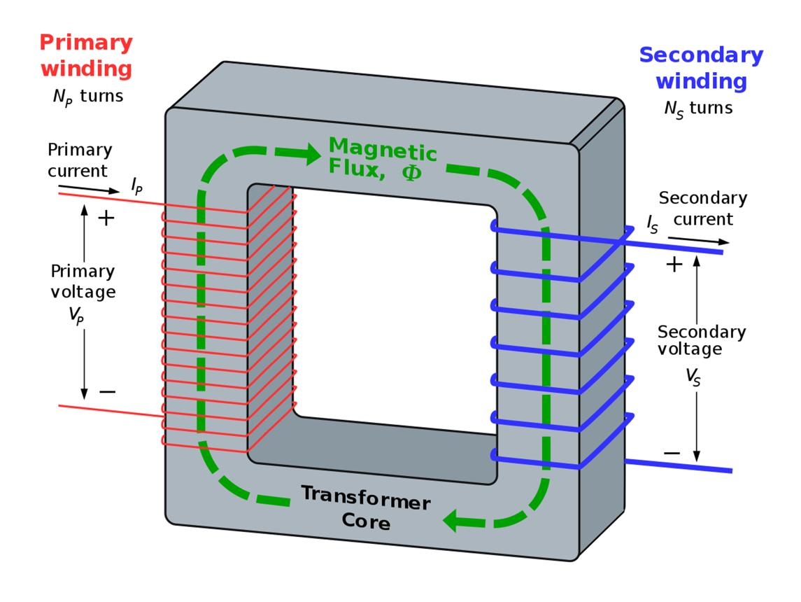
Figure 1.1 — Basic Transformer Operating Principle
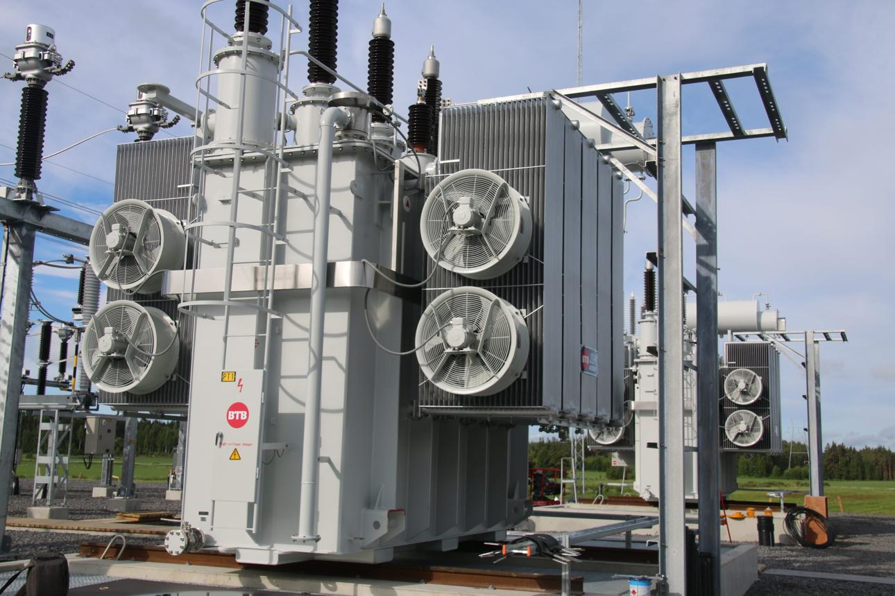
Figure 1.2 — Transformer Physical Construction
Ideal Transformer Equations
نبدأ دائمًا بالمعادلة الأساسية التي تربط الجهد بنسبة اللفات:
حيث \(a\) هي Turns Ratio. إذا كان \(N_2 > N_1\)، فالمحول رافع للجهد Step-up. وإذا كان \(N_2 < N_1\)، فالمحول خافض للجهد Step-down.
علاقة التيار عكسية:
وفي المحول المثالي، القدرة الداخلة تساوي القدرة الخارجة:
💡 ملاحظة مهمة
الفكرة المهمة: عندما يزيد الجهد، يقل التيار بالنسبة نفسها تقريبًا في المحول المثالي، والعكس صحيح. هذا هو أساس نقل القدرة الكهربائية بجهد عالي لتقليل الفقد في خطوط النقل.
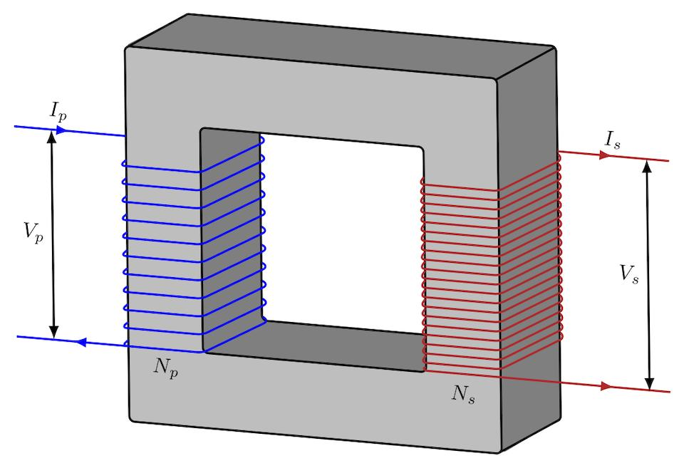
Figure 1.3 — Ideal Transformer Voltage-Current Relationships
Magnetic Flux and Leakage Flux
يوجد نوعان مهمان من الفيض:
Definition — Flux Types
- Mutual Flux: الفيض المشترك الذي يربط الملفين ويساهم في نقل الطاقة.
- Leakage Flux: الفيض المتسرب الذي يربط أحد الملفين دون الآخر، ويساهم في ظهور Leakage Reactance.
هذه الفكرة ستظهر لاحقًا في الدائرة المكافئة للمحول.
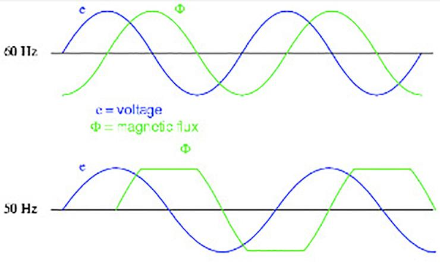
Figure 1.4 — Faraday's Law of Electromagnetic Induction
Ideal Transformer Assumptions & EMF Equation
Definition — Ideal Transformer Assumptions
- لا توجد مقاومة في الملفات، إذن لا يوجد Copper Loss.
- لا يوجد Leakage Flux؛ كل الفيض الرئيسي يربط الملفين.
- لا يوجد Core Loss (لا Hysteresis ولا Eddy Current).
- نفاذية القلب لا نهائية \(\mu_r=\infty\)، فيكون Magnetizing Current مهملًا.
- الكفاءة \(100\%\).
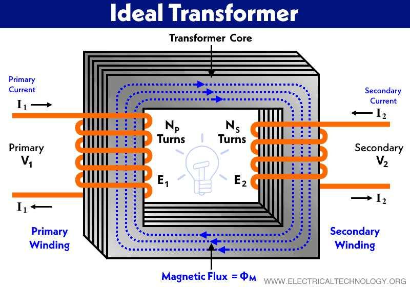
Figure 1.5 — Ideal Transformer — Primary/Secondary, Core and Magnetic Flux
حيث \(f\) التردد بالهرتز، و\(N\) عدد اللفات، و\(\Phi_{\max}\) القيمة العظمى للفيض بوحدة Wb. ومنها \(\Phi_{\max}\propto \dfrac{V}{fN}\).
Derivation — Why the transformer equations hold
أساس كل المعادلات السابقة هو قانون Faraday: القوة الدافعة المستحثة في ملف عدد لفاته \(N\) تساوي \(e=N\,\dfrac{d\Phi}{dt}\) (بالقيمة المطلقة)، حيث \(e\) القيمة اللحظية بالفولت و\(\Phi\) الفيض المار بالملف بوحدة Wb.
- نسبة الجهد: الملفان يخترقهما نفس الفيض، فيكون \(\dfrac{e_1}{e_2}=\dfrac{N_1\,d\Phi/dt}{N_2\,d\Phi/dt}=\dfrac{N_1}{N_2}\). وفي المحول المثالي \(V_1=E_1\) و\(V_2=E_2\) فنحصل على \(V_1/V_2=N_1/N_2=a\).
- معادلة 4.44: بفيض جيبي \(\Phi=\Phi_{\max}\sin\omega t\) يكون \(e=N\omega\Phi_{\max}\cos\omega t\)، فالقيمة العظمى \(E_{\max}=2\pi fN\Phi_{\max}\) والقيمة الفعالة \(E_{\text{rms}}=\dfrac{E_{\max}}{\sqrt2}=\dfrac{2\pi}{\sqrt2}fN\Phi_{\max}=4.44\,fN\Phi_{\max}\).
- الطور: \(\cos\omega t=\sin(\omega t+90^\circ)\)، أي أن الجهد المستحث يتقدم على الفيض بـ \(90^\circ\). والقوة الدافعة العكسية \(E_1=-N_1\,d\Phi/dt\) (قانون لنز) تعارض الجهد المطبّق \(V_1\approx-E_1\)، فتتأخر عن الفيض بـ \(90^\circ\). هذه العلاقة هي أساس رسم مخطط اللاحمل في Section 09.
- نسبة التيار: في المحول المثالي \(\mu_r=\infty\)، فلا يلزم mmf صافية لإنشاء الفيض: \(N_1I_1=N_2I_2\Rightarrow \dfrac{I_1}{I_2}=\dfrac{N_2}{N_1}\)، وهو ما يضمن \(V_1I_1=V_2I_2\) (حفظ القدرة).
⚠️ تنبيه — Saturation
إذا زاد الجهد عن المقنن عند تردد ثابت، أو قل التردد عند جهد ثابت، يزيد الفيض في القلب ويقترب من الإشباع Saturation. لذلك يجب تشغيل المحول داخل علاقة الجهد والتردد المقننة.
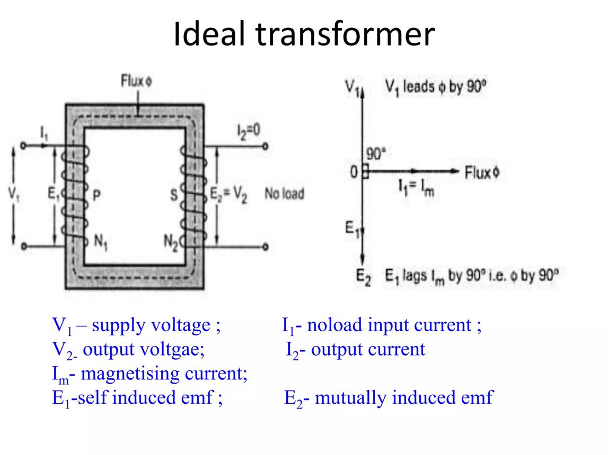
Figure 1.6 — Ideal Transformer at No Load — Flux, Magnetizing Current and Induced EMF Phasors
Rating, Construction & Practical Notes
Definition — Practical Notes
- kVA وليس kW: التسخين يعتمد على الجهد والتيار، أما معامل القدرة وبالتالي الـ kW فيحددهما الحمل المتصل. \(S_{\text{rated}}=V_1I_1=V_2I_2\) و \(I_{\text{rated}}=S/V\).
- لا يعمل على DC: لأن \(d\Phi/dt=0\) فلا يُستحث جهد. وعند توصيل جهد DC يصبح \(X_L=0\) والمعاوقة هي المقاومة فقط، فيمر تيار كبير جدًا ويحترق الملف الابتدائي.
- Core type: دائرة مغناطيسية واحدة (غالبًا two-limb)، وShell type: دائرتان مغناطيسيتان (three-limb) والساق الوسطى مساحتها أكبر لأنها تحمل الفيض المشترك.
- يوضع ملف الجهد المنخفض LV أقرب للقلب لأن عزله أسهل، بينما يزيد العزل المطلوب مع ارتفاع الجهد HV.
- الشرائح المعزولة Laminated Core تقلل Eddy Current؛ وأنظمة التبريد مثل ONAN, ONAF, OFAF, ODAF, OFWF تسمح بحمل أعلى عند نفس حد ارتفاع الحرارة، ولا تعني بالضرورة كفاءة ذاتية أعلى.
- CT: يجب ألا يُترك ثانويه مفتوحًا وهو مغذّى. وVT/PT: يعطي جهدًا مخفضًا للقياس والحماية.
الأشكال التالية تتبع نقاط القائمة السابقة بالترتيب: DC، ثم Core/Shell، ثم ترتيب الملفات، ثم Eddy Current، ثم التبريد، ثم CT/VT.
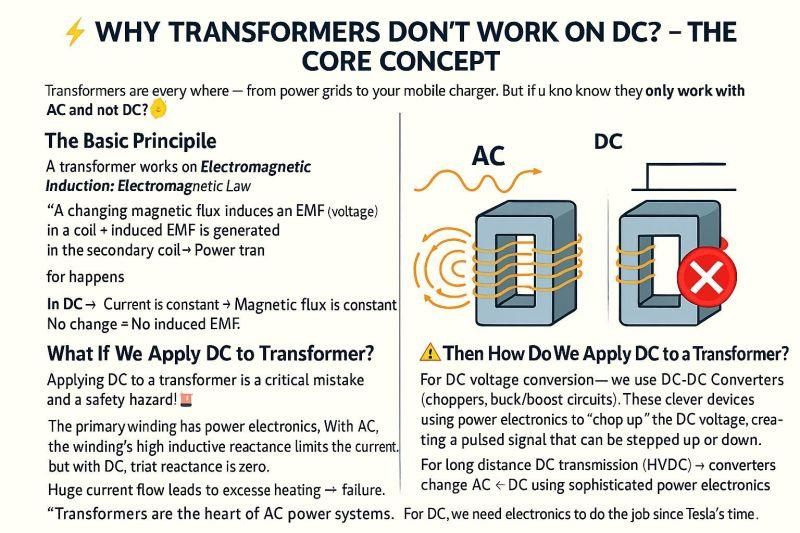
Figure 1.7 — Why a Transformer Does Not Work on DC
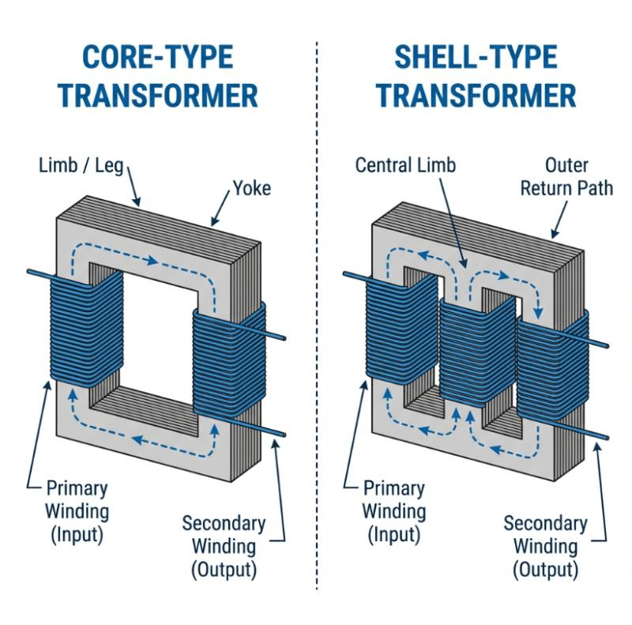
Figure 1.8 — Core-Type vs Shell-Type Transformer
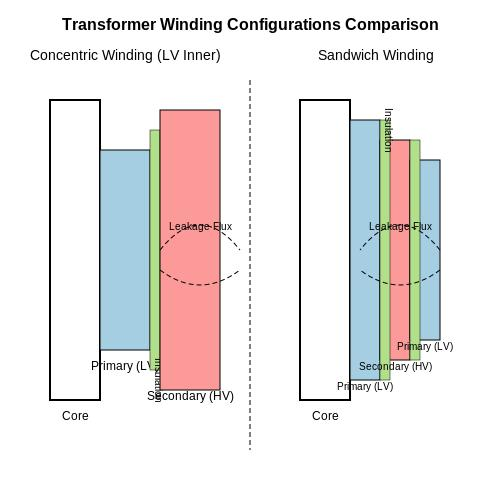
Figure 1.9 — Concentric vs Sandwich (Interleaved) Winding
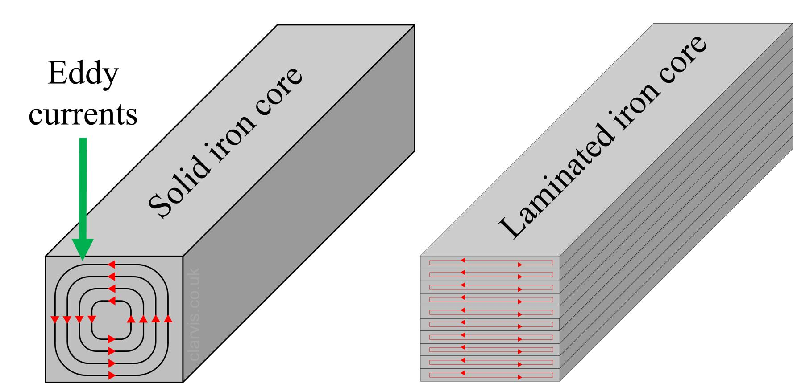
Figure 1.10 — Eddy Currents — Solid vs Laminated Iron Core
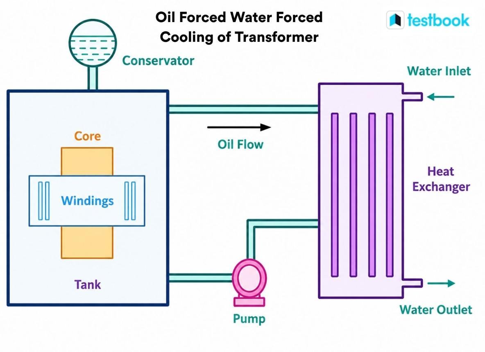
Figure 1.11 — Oil Forced Water Forced (OFWF) Cooling
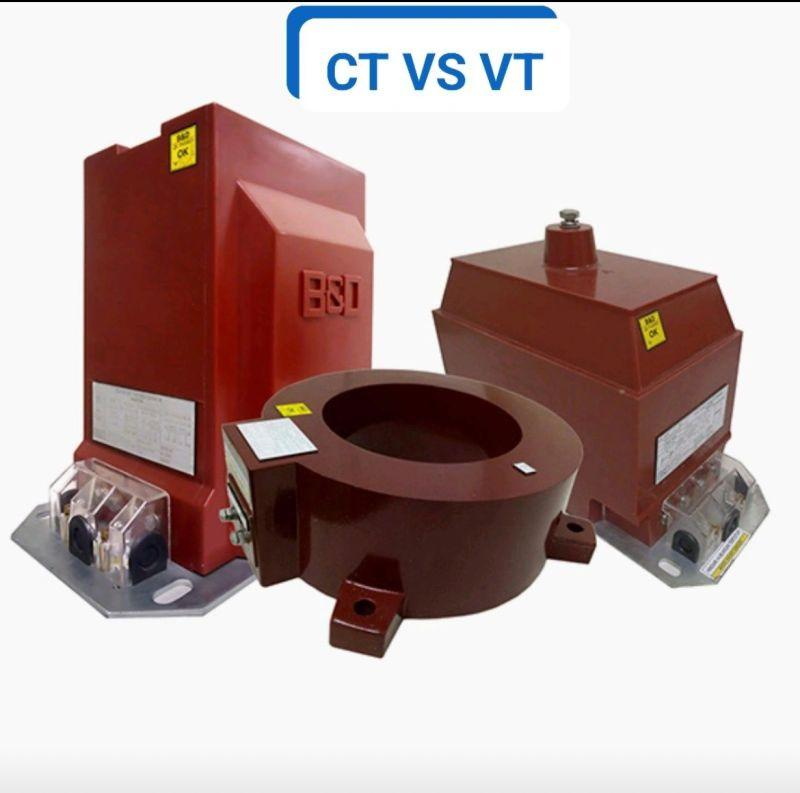
Figure 1.12 — Current Transformer (CT) vs Voltage Transformer (VT)
💡 الخلاصة
رفع الجهد قلّل تيار الخط من 90.8 A إلى 9.59 A، فنقص هبوط الجهد (27.24 V ← 2.9 V) وفقد الخط (1484 W ← 16.7 W) وارتفع جهد الحمل (454 V ← 479.7 V)، كما تقل مساحة مقطع الكابل المطلوبة.
Worked Examples — Ideal Transformer & High-Voltage Transmission
Example 1.1Lec 1, p.10
Question
25 kVA ideal transformer, N_P = 500, N_S = 40, connected to 3000 V, 50 Hz. Find full-load primary and secondary currents, secondary EMF, and maximum core flux.
Given
\(S=25\) kVA, \(N_P=500,\ N_S=40\), \(V_P=3000\) V, \(f=50\) Hz.
Required
Full-load \(I_P,\ I_S\); \(V_S\); \(\phi_{\max}\).
Solution
\[ \begin{aligned}I_P&=\tfrac{25\times10^3}{3000}=8.33\text{ A},\quad I_S=I_P\tfrac{N_P}{N_S}=\tfrac{25000}{240}=104.17\text{ A}\\[0.75em] V_S&=3000\times\tfrac{40}{500}=240\text{ V}\\[0.75em] \phi_{\max}&=\tfrac{3000}{4.44\times50\times500}=\boxed{27\text{ mWb}}\end{aligned} \]
Example 1.2Lec 1, p.11
Question
Ideal transformer, 90 turns primary and 2250 turns secondary, on a 200 V, 50 Hz source. The load draws 2 A at 0.8 PF lagging. Find (a) primary current, (b) secondary voltage, (c) load impedance, (d) load impedance referred to the primary, (e) input/output P, Q, S, (f) input PF, (g) peak flux.
Given
\(N_P=90,\ N_S=2250,\ V_P=200\) V, \(f=50\) Hz, \(I_S=2\) A, PF = 0.8 lag.
Required
(a)–(g) as listed.
Solution
\[ \begin{aligned}n&=\tfrac{N_S}{N_P}=25\\[0.75em] I_P&=nI_S=50\text{ A},\quad V_S=nV_P=5000\text{ V}\\[0.75em] |Z_L|&=\tfrac{5000}{2}=2500\ \Omega,\quad Z_L^{\prime}=\tfrac{Z_L}{n^2}=\tfrac{2500}{625}=4\ \Omega\\[0.75em] P&=5000(2)(0.8)=8000\text{ W},\quad Q=5000(2)(0.6)=6000\text{ var},\quad |S|=10\text{ kVA}\\[0.75em] \phi_{\max}&=\tfrac{5000}{4.44(50)(2250)}=10.0\text{ mWb}\end{aligned} \]
Discussion
Ideal transformer: \(P,Q,S\) and PF are identical on both sides, and the same flux links both windings.
Example 1.3Lec 1, p.12
Question
A 480 V, 60 Hz generator supplies a load \(Z_L=4+j3\ \Omega\) through a line \(Z_{line}=0.18+j0.24\ \Omega\). Find the line voltage drop, load voltage and line power loss.
Given
\(V_G=480\angle0^\circ\) V, 60 Hz; \(Z_L=4+j3\ \Omega\); \(Z_{line}=0.18+j0.24\ \Omega\).
Required
\(V_{drop}\), \(V_L\), \(P_{loss}\) (no transformers).
Solution
\[ \begin{aligned}I_{line}&=\tfrac{480\angle0^\circ}{(0.18+j0.24)+(4+j3)}=90.8\angle-37.8^\circ\text{ A}\\[0.75em] V_{drop}&=27.24\angle15.33^\circ\text{ V},\ V_L\approx454\angle-0.93^\circ\text{ V},\ P_{loss}=90.8^2(0.18)\approx1484\text{ W}\end{aligned} \]
Example 1.4Lec 1, p.13
Question
The same system, now with two ideal transformers (1:10 step-up at the generator, 10:1 step-down at the load). Find the line voltage drop, load voltage and line power loss.
Given
\(V_G=480\angle0^\circ\) V, 60 Hz; \(Z_L=4+j3\ \Omega\); \(Z_{line}=0.18+j0.24\ \Omega\). Transformers 1:10 and 10:1.
Required
\(V_{drop}\), \(V_L\), \(P_{loss}\) (with transformers).
Solution
\[ \begin{aligned}Z_L'&=\tfrac{4+j3}{0.1^2}=400+j300\ \Omega,\quad V^{\prime}=10\times480=4800\text{ V}\\[0.75em] I_{line}&=\tfrac{4800}{0.18+j0.24+400+j300}=9.59\angle-36.87^\circ\text{ A}\\[0.75em] V_{drop}&=2.877\angle16.25^\circ\text{ V},\ I_{load}=95.9\angle-36.87^\circ\text{ A},\ V_L=479.5\angle-0.01^\circ\text{ V},\ P_{loss}\approx16.7\text{ W}\end{aligned} \]
Discussion
Recomputed check: exactly, \(I_{line}=9.594\angle-36.88^\circ\) A, so \(V_L=479.7\) V (not 479.5 V) and \(P_{loss}=9.594^2\times0.18=16.6\) W (not 16.7 W). The Section 01 summary note already quotes 479.7 V. The final answer above keeps the source figures; the differences (about 0.04 % in V_L and 0.6 % in P_loss) do not change any conclusion. The phasor method used here is explained in Section 06.
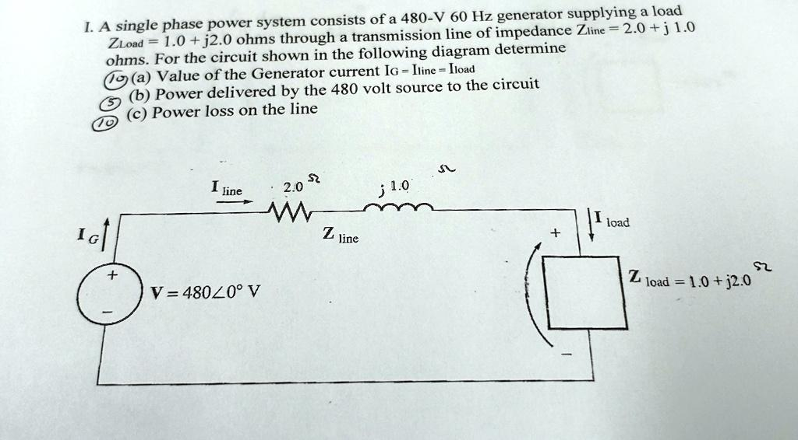
Figure 1.13 — Source Problem Figure — Generator, Line and Load (Example 1.3)
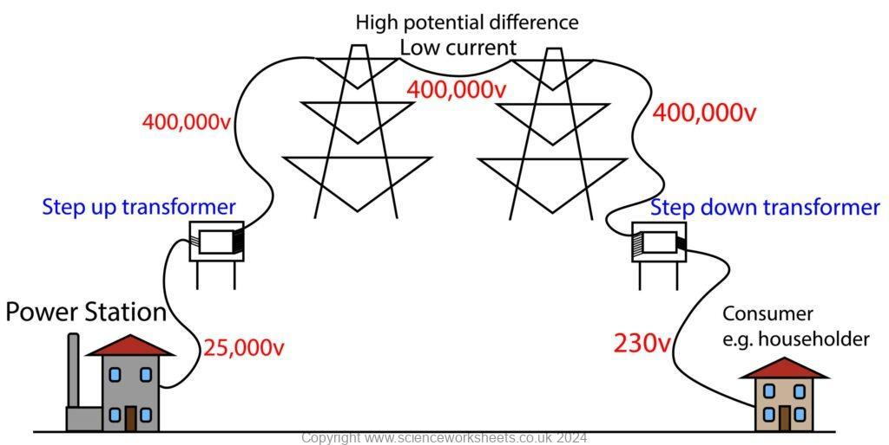
Figure 1.14 — Step-up and Step-down Transformers in a Power Transmission System
المحول الحقيقي ليس مثاليًا؛ لأن الملفات لها مقاومة، والفيض يتسرب، والقلب الحديدي يستهلك قدرة. لذلك نمثل المحول بدائرة كهربائية مكافئة.
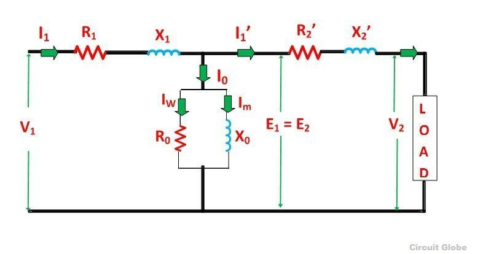
Figure 2.1 — Complete Transformer Equivalent Circuit
Referring Impedances to the Primary Side
إذا كانت \(a = \frac{N_1}{N_2}\) فإن المقاومة والمفاعلة المحولتين من الثانوي إلى الابتدائي تُحسبان بضربهما في مربع نسبة اللفات:
كذلك يتم تحويل الجهد والتيار:
الرمز ′ (prime) يعني «مُحال إلى الجانب الآخر». ومن هاتين العلاقتين نحصل على سبب مربع النسبة: \(Z_2'=\dfrac{V_2'}{I_2'}=\dfrac{aV_2}{I_2/a}=a^2\dfrac{V_2}{I_2}=a^2Z_2\). الإحالة تضرب المقدار فقط في عدد حقيقي (\(a^2\))، فلا تتغير زاوية الممانعة \(\varphi\)، ولا تتغير القدرة \(V_2'I_2'=V_2I_2\).
بعد تحويل عناصر الثانوي إلى الابتدائي، يمكن جمع العناصر المتسلسلة:
⚠️ قاعدة أساسية
لا تجمع ممانعة الابتدائي مع ممانعة الثانوي مباشرةً إلا بعد تحويلهما إلى الجانب نفسه.
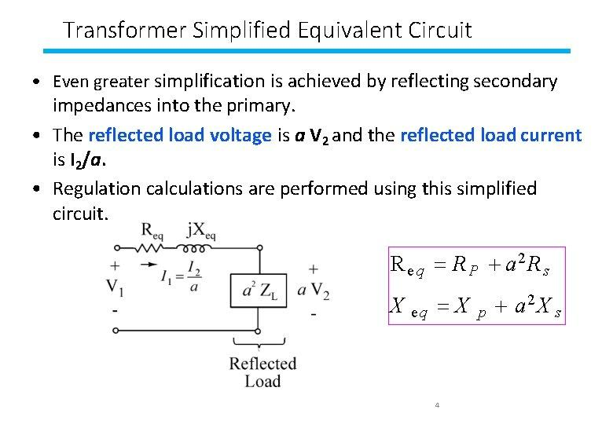
Figure 2.2 — Equivalent Circuit Referred to Primary Side
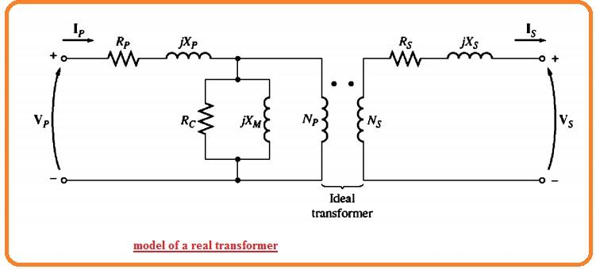
Figure 2.3 — Simplified Equivalent Circuit
Referring to the Secondary Side
عند الإحالة من الابتدائي إلى الثانوي نقسم على \(a^2\) (عكس الإحالة إلى الابتدائي):
⚠️ قاعدة
اذكر دائمًا الجانب الذي أُحيلت إليه الدائرة قبل استخدام أي معامل، ولا تخلط معاملات مُحالة إلى الابتدائي بأخرى مُحالة إلى الثانوي في معادلة واحدة. وإهمال فقد القلب تقريب وليس معناه أن القلب بلا فقد؛ استخدم الدائرة الكاملة عند طلب تيار اللاحمل.
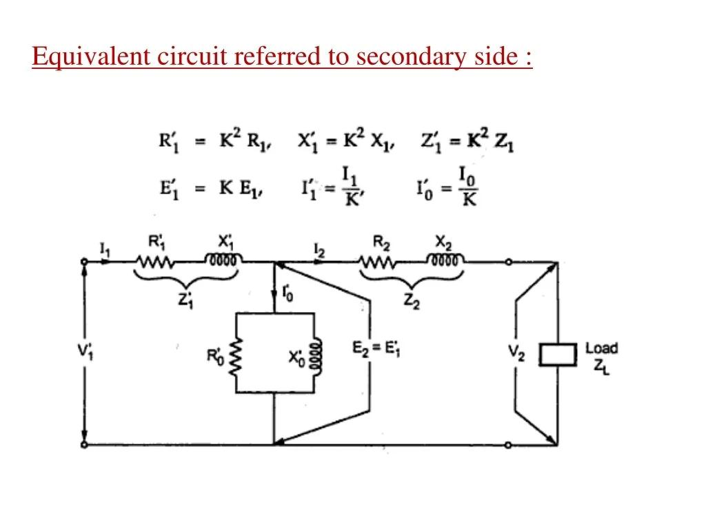
Figure 2.4 — Equivalent Circuit Referred to the Secondary Side
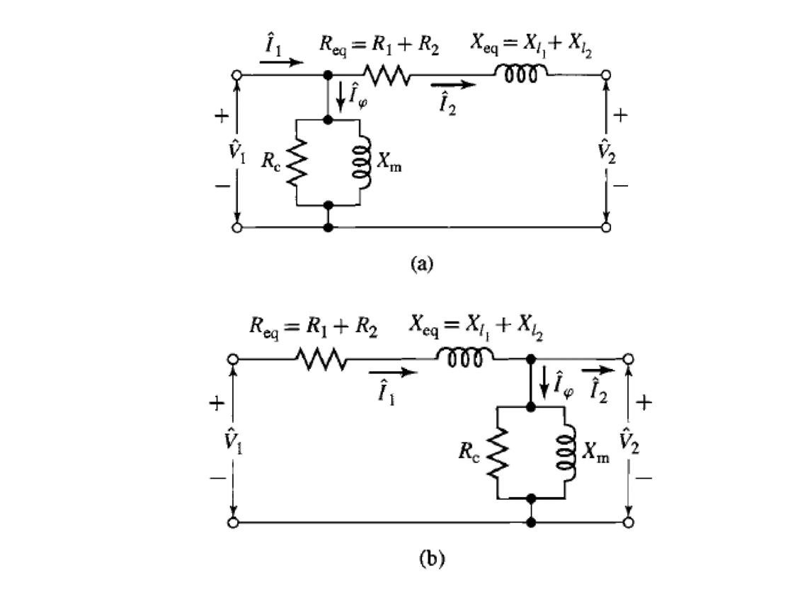
Figure 2.5 — Approximate Equivalent Circuits (a) Referred to Primary, (b) Shunt Branch Moved
➡️ ربط بالأقسام التالية
تيار اللاحمل \(I_0\) ومركبتاه \(I_c, I_m\) اللذان يظهران في فرع \(R_c \parallel jX_m\) مشروحان بالتفصيل في Section 09، وهما أساس اختبار OC في Section 04؛ ويُنصح بمراجعتهما قبل حل أمثلة الاختبارات.
Worked Example — Equivalent-Circuit Parameters
Example 2.2Lec 2, p.22
Question
50 kVA, 4400/220 V, 1-φ transformer: \(R_1=3.45,\ R_2=0.009,\ X_1=5.2,\ X_2=0.015\ \Omega\). Find full-load currents, parameters referred to each side, and full-load copper loss.
Given
\(S=50\) kVA, \(n=N_2/N_1=1/20\).
Required
\(I_1,I_2\); \(R_{eq},X_{eq}\) on primary and secondary; \(P_{cu}\).
Solution
\[ \begin{aligned}I_1&=\tfrac{50000}{4400}=11.36\text{ A},\quad I_2=\tfrac{50000}{220}=227.27\text{ A}\\[0.75em] R_{eq1}&=3.45+\tfrac{0.009}{(1/20)^2}=7.05\ \Omega,\quad X_{eq1}=5.2+\tfrac{0.015}{(1/20)^2}=11.2\ \Omega\\[0.75em] R_{eq2}&=0.009+3.45(1/20)^2=17.625\text{ m}\Omega,\quad X_{eq2}=0.015+5.2(1/20)^2=0.028\ \Omega\\[0.75em] P_{cu}&=11.36^2(3.45)+227.27^2(0.009)\approx910\text{ W}\end{aligned} \]
الفقد الأساسي في المحول ينقسم إلى نوعين رئيسيين.
Core Losses (Iron Losses)
Definition — Core Losses
- Hysteresis Loss: الفقد الناتج عن دورات المغنطة وإعادة المغنطة.
- Eddy Current Loss: الفقد الناتج عن التيارات الدوامية داخل القلب الحديدي.
تقسيم القلب إلى شرائح حديدية معزولة Laminated Core يقلل التيارات الدوامية. عند ثبات جهد وتردد التغذية، يُعامل فقد القلب عادةً على أنه شبه ثابت مع تغير الحمل.
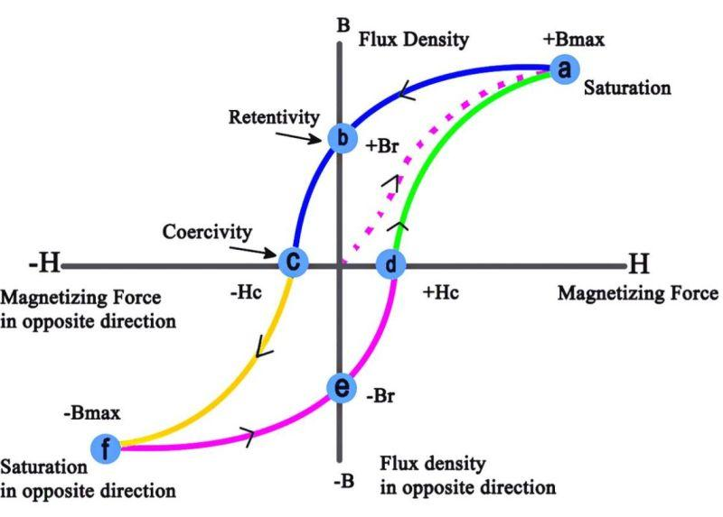
Figure 3.1 — Hysteresis Loop (B-H Curve)
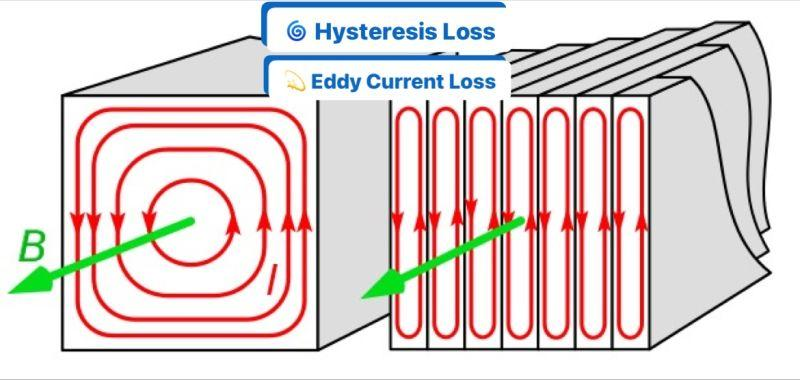
Figure 3.2 — Hysteresis and Eddy Current Losses in Transformers
Copper Losses
تنتج عن مقاومة الملفات، وتحسب باستخدام القانون الأساسي:
والفقد الكلي التقريبي:
💡 ملاحظة
لاحظ أن فقد النحاس يعتمد على مربع التيار؛ فإذا تضاعف التيار، أصبح فقد النحاس أربعة أضعاف، عند ثبات المقاومة.
Transformer Efficiency
للحمل أحادي الطور:
⚠️ تنبيه
لا تستخدم \(VI\) بدلًا من القدرة الفعالة \(VI\cos\phi\) عند حساب الكفاءة، إلا إذا كان الحمل مقاوميًا تمامًا أو كان معامل القدرة يساوي واحدًا.
Maximum Efficiency Condition
أي إن الكفاءة تبلغ أقصاها تقريبًا عندما يتساوى فقد النحاس مع فقد القلب.
Load Fraction, Maximum Efficiency & All-Day Efficiency
إذا كان \(x\) نسبة الحمل من الحمل المقنن، فإن فقد النحاس يتغير بمربع التيار بينما فقد القلب ثابت تقريبًا:
📐 من أين يأتي شرط الكفاءة القصوى؟
بقسمة بسط ومقام \(\eta\) على \(x\): \(\eta=\dfrac{S\cos\phi}{S\cos\phi+\dfrac{P_{\text{core}}}{x}+x\,P_{\text{Cu,FL}}}\). تبلغ \(\eta\) أقصاها عندما يكون المقام أصغر ما يمكن، أي عندما \(\dfrac{d}{dx}\!\left(\dfrac{P_{\text{core}}}{x}+xP_{\text{Cu,FL}}\right)=0\Rightarrow x^2=\dfrac{P_{\text{core}}}{P_{\text{Cu,FL}}}\). عندها \(x^2P_{\text{Cu,FL}}=P_{\text{core}}\) أي \(P_{\text{Cu}}=P_{\text{core}}\) وهو الشرط السابق، ويكون الفقد الكلي \(2P_{\text{core}}\) فتظهر صيغة \(\eta_{\max}\). وهذا يفترض ثبات الجهد والتردد ومعامل القدرة \(\cos\phi\) عند تغيير الحمل.
💡 ملاحظة
كفاءة اليوم الكامل تُحسب بالطاقة (kWh) وليس بقدرة لحظية، وهي مهمة لمحولات التوزيع ذات الحمل المتغير؛ فقد القلب يُحسب على 24 ساعة حتى لو كان الحمل صفرًا. وتذكّر أن الخرج يساوي kVA × نسبة الحمل × PF.
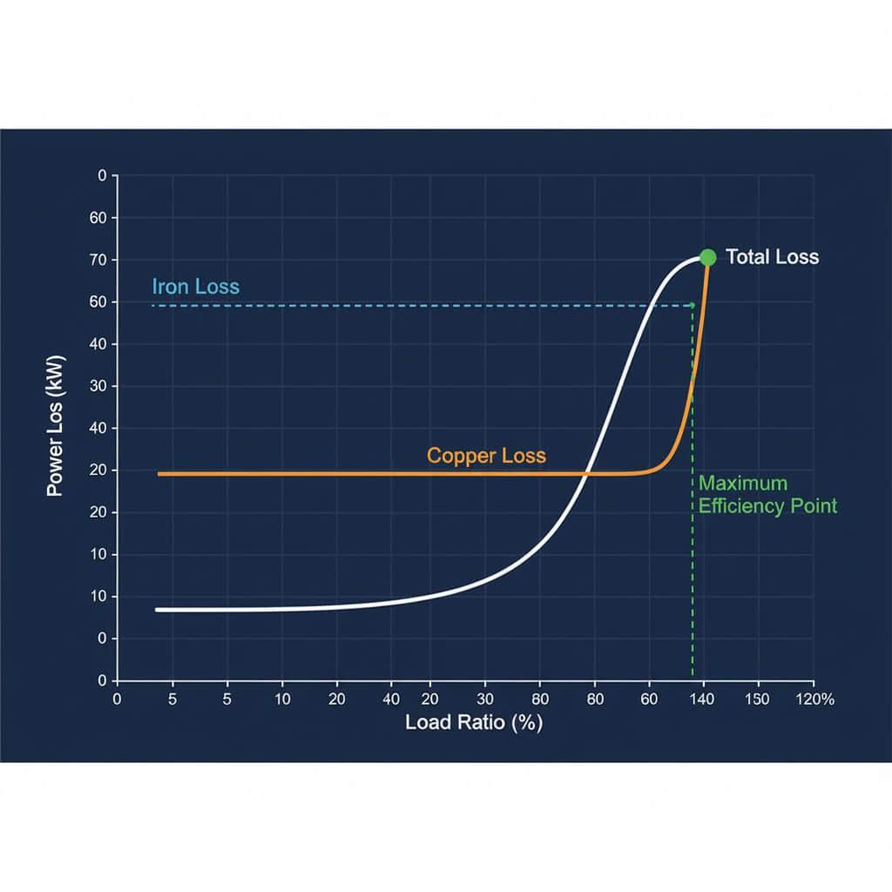
Figure 3.3 — Copper Loss vs Core Loss — Maximum Efficiency Point
Worked Examples — Efficiency
Example 3.5Lec 3, p.39
Question
A 10 kVA, 2200/220 V, 60 Hz transformer: no-load input power 100 W; with LV short-circuited at rated current the input is 215 W. Find (a) efficiency at 75% of rated output and 0.6 PF lag, (b) maximum efficiency at PF = 1.
Given
10 kVA, 2200/220 V, 60 Hz; \(P_{ir}=100\) W; \(P_{cu}=215\) W at rated current.
Required
(a) \(\eta\) at 75 % load, 0.6 PF lag. (b) Maximum efficiency at PF = 1.
Solution
\[ \begin{aligned}P_{ir}&=100\text{ W},\quad P_{Cu}=215\text{ W}\\[0.75em] \eta_{75\%}&=\frac{0.75(10\times10^3)(0.6)}{0.75(10\times10^3)(0.6)+100+215(0.75)^2}\times100=\boxed{95.32\%}\\[0.75em] S_{\max}&=10\times10^3\sqrt{\tfrac{100}{215}}=6819.94\text{ VA}\\[0.75em] \eta_{\max}&=\frac{6819.94\times1}{6819.94\times1+2(100)}\times100=\boxed{97.15\%}\end{aligned} \]
Example 3.6Lec 3, p.40
Question
A 20 kVA transformer on domestic load (PF = 1) has full-load efficiency 95.3% with copper loss = 2 × iron loss. Daily cycle: no load 10 h, half load 8 h, full load 6 h. Find the all-day efficiency.
Given
20 kVA, unity PF, \(\eta_{FL}=95.3\%\), \(P_{cu}=2P_{ir}\). Cycle: no load 10 h, half load 8 h, full load 6 h.
Required
All-day efficiency.
Solution
\[ \begin{aligned}P_{in}&=\tfrac{20\times10^3}{0.953}=20.986\text{ kW},\ \text{losses}=986\text{ W}\\[0.75em] P_{Cu}&=657.33\text{ W},\quad P_{ir}=328.67\text{ W}\\[0.75em] W_o&=0.5(20)(8)+1(20)(6)=200\text{ kWh}\\[0.75em] W_{ir}&=328.67\times24=7.88\text{ kWh}\\[0.75em] W_{Cu}&=0.5^2(657.33)(8)+1^2(657.33)(6)=5.258\text{ kWh}\\[0.75em] \eta_{\text{all-day}}&=\frac{200}{200+7.88+5.258}\times100=\boxed{93.8\%}\end{aligned} \]
يوجد اختباران أساسيان لتحديد معاملات المحول دون الحاجة إلى تحميله بحمله الكامل.
Open-Circuit Test (OC Test)
Purpose
الغرض الأساسي: تحديد Core Loss ومعاملات فرع المغنطة \(R_c\) و \(X_m\).
تُقاس: الجهد \(V_{OC}\)، التيار \(I_{OC}\)، القدرة \(P_{OC}\).
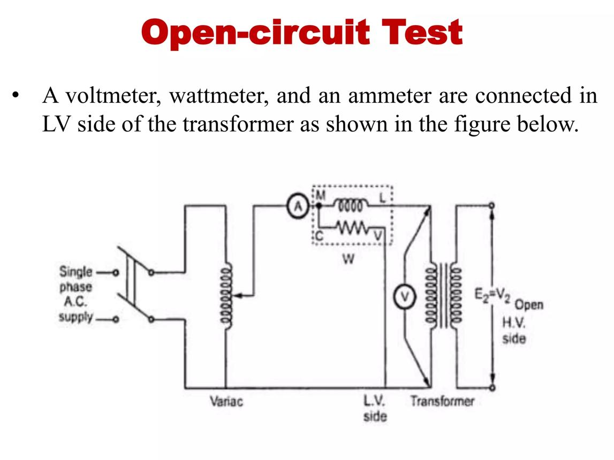
Figure 4.1 — OC & SC Test Circuit Diagrams
Short-Circuit Test (SC Test)
Purpose
الغرض الأساسي: تحديد Equivalent Series Impedance و Copper Loss عند تيار الاختبار.
تُقاس: جهد القصر \(V_{SC}\)، تيار القصر \(I_{SC}\)، القدرة \(P_{SC}\).
💡 ملاحظة
عندما يكون تيار الاختبار هو التيار المقنن: \(\boxed{P_{\text{Cu,FL}} \approx P_{SC}}\)
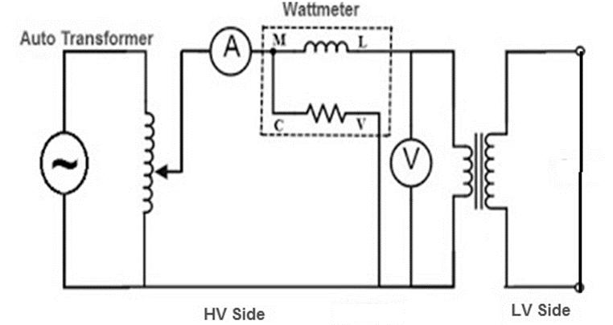
Figure 4.2 — Short-Circuit Test Setup
Comparison of OC and SC Tests
⚠️ ملاحظة عملية
تُجرى هذه الاختبارات باستخدام تجهيزات مناسبة للحماية والتحكم، وليس عن طريق توصيلات عشوائية.
Test Calculation Details
📐 لماذا تصح هذه التقريبات؟
اختبار OC: الثانوي مفتوح فيمر في الابتدائي تيار \(I_{OC}\) صغير جدًا مقارنة بالتيار المقنن، فيكون هبوط الجهد على \(R_1,X_1\) وفقد النحاس \(I_{OC}^2R_1\) مهملين، ويكون الجهد المطبق (المقنن غالبًا) هو جهد فرع المغنطة كاملًا، فتقيس القدرة \(P_{OC}\) فقد القلب. ومن \(P=V\,I_c\) نحصل على \(I_c\) ثم \(R_c=V_{OC}/I_c=V_{OC}^2/P_{OC}\) (الفرع على التوازي فكلا المركبتين تحت نفس الجهد).
اختبار SC: يُطبّق جهد صغير جدًا يكفي لمرور التيار المقنن، فيكون الفيض (وبالتالي فقد القلب وتيار المغنطة) مهملًا، ويمر نفس التيار في \(R_{eq}\) و\(X_{eq}\) على التوالي، فتقيس القدرة \(P_{SC}\approx I_{SC}^2R_{eq}\). ومنه \(R_{eq}=P_{SC}/I_{SC}^2\)، و\(Z_{eq}=V_{SC}/I_{SC}\) (مقداران)، ثم \(X_{eq}=\sqrt{Z_{eq}^2-R_{eq}^2}\) من مثلث الممانعة (Section 06 ومخطط Section 06 التفاعلي). كل القيم تخص الجانب المقيس وتُحال بـ \(a^2\) للجانب الآخر.
📌 نقاط مهمة
يُجرى اختبار OC عادةً على ملف الجهد المنخفض لسهولة التعامل، ويُجرى SC على ملف الجهد العالي حتى يمر التيار المقنن بجهد صغير. تُحسب القيم على الجانب المقاس، ثم تُحال إلى الجانب الآخر بمربع نسبة اللفات. وفي الأنظمة ثلاثية الطور حدد هل القراءات لكل وجه أم كلية. كما يتضمن الاختبار في المصنع FAT وفي الموقع SAT للتحقق من الأداء والحالة؛ وقائمة الاختبارات التفصيلية تعتمد على المواصفة القياسية ومتطلبات المشروع.
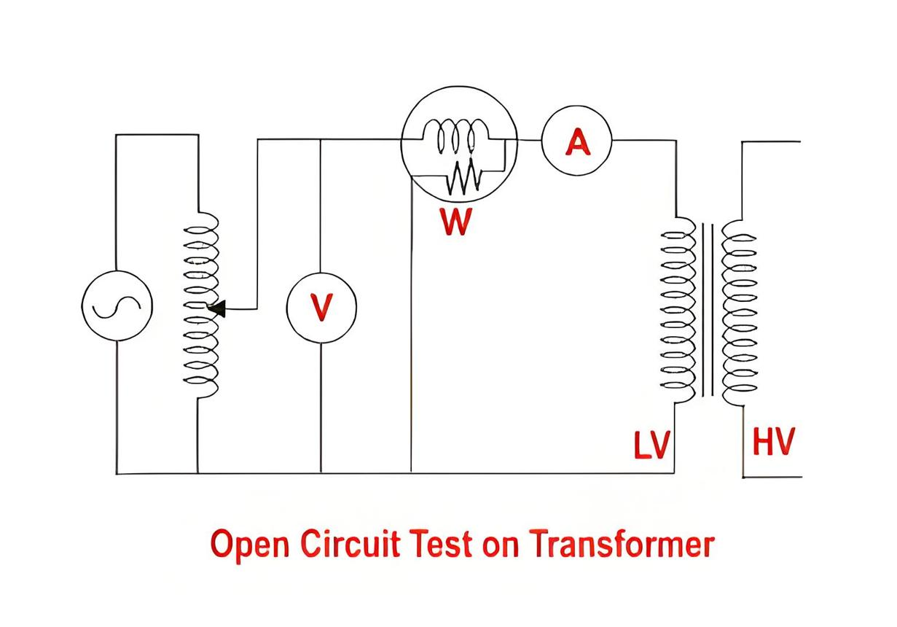
Figure 4.3 — Open-Circuit Test — Instrument Connections (LV Side Energized)
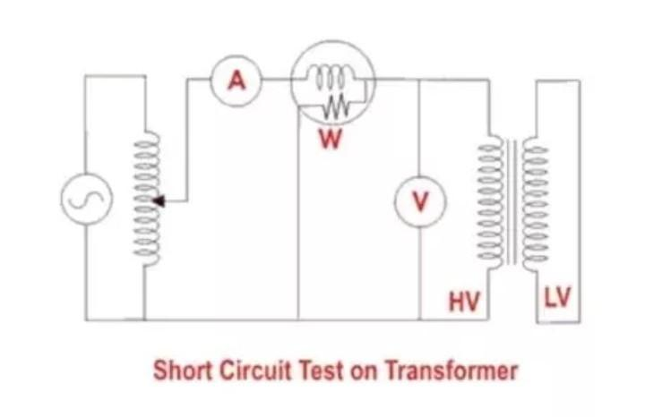
Figure 4.4 — Short-Circuit Test — Instrument Connections (HV Side)
➡️ ربط
مركبتا تيار اللاحمل \(I_c\) و\(I_m\) المستخدمتان هنا مشروحتان في Section 09 (No-Load Current).
Worked Examples — OC & SC Tests
Example 2.3Lec 2, p.24
Question
A 230/110 V single-phase transformer has a core loss of 100 W and an input of 400 VA at no load. Find the core-loss resistance, magnetising reactance and no-load PF.
Given
\(V_1=230\) V, \(P_0=100\) W, \(S_0=400\) VA (open-circuit test).
Required
\(R_c,\ X_m,\ \cos\phi_0\).
Solution
\[ \begin{aligned}I_0&=\tfrac{400}{230}=1.739\text{ A},\quad I_c=\tfrac{100}{230}=0.435\text{ A}\\[0.75em] R_c&=\tfrac{230}{0.435}=529\ \Omega\\[0.75em] I_m&=\sqrt{1.739^2-0.435^2}=1.684\text{ A},\quad X_m=\tfrac{230}{1.684}=136.6\ \Omega\\[0.75em] \cos\phi_0&=\tfrac{100}{400}=0.25\end{aligned} \]
Example 2.4Lec 2, p.25
Question
Single-phase 50 kVA, 2300/230 V, 50 Hz transformer; 230 V is applied to the secondary with the primary open. Meters read 230 W, 230 V, 6.5 A. Find core loss, \(I_c\), \(R_c\), \(I_m\), \(X_m\).
Given
LV-side OC test: \(V=230\) V, \(I_0=6.5\) A, \(P=230\) W; \(n=\tfrac{1}{10}\).
Required
\(P_c,\ I_c,\ R_c,\ I_m,\ X_m\) (LV and HV).
Solution
\[ \begin{aligned}I_c&=\tfrac{230}{230}=1\text{ A},\quad R_{c2}=230\ \Omega,\quad R_{c1}=\tfrac{230}{0.1^2}=23\,000\ \Omega\\[0.75em] I_m&=\sqrt{6.5^2-1^2}=6.422\text{ A},\quad X_{m2}=\tfrac{230}{6.422}=35.81\ \Omega,\quad X_{m1}=3581\ \Omega\end{aligned} \]
Example 2.5Lec 2, p.26
Question
1-φ, 10 kVA, 2200/220 V, 60 Hz. OCT (LV side): V = 220 V, I = 2.5 A, P = 100 W. SCT (HV side energized, LV shorted): V = 150 V, I = 4.55 A, P = 215 W. Find the approximate equivalent-circuit parameters referred to the LV and HV sides.
Given
10 kVA, 2200/220 V, 60 Hz. OCT (LV): 220 V, 2.5 A, 100 W. SCT (HV energised, LV shorted): 150 V, 4.55 A, 215 W.
Required
Approximate equivalent-circuit parameters referred to LV and HV sides.
Solution
\[ \begin{aligned}I_c&=\tfrac{100}{220}=0.455\text{ A},\quad I_m=\sqrt{2.5^2-0.455^2}=2.458\text{ A}\\[0.75em] R_{c2}&=\tfrac{220}{0.455}=483.516\ \Omega,\quad X_{m2}=\tfrac{220}{2.458}=89.503\ \Omega\\[0.75em] n&=\tfrac{220}{2200}=0.1\ \Rightarrow\ R_{c1}=\tfrac{R_{c2}}{n^2}=48351.6\ \Omega,\ X_{m1}=8950.3\ \Omega\\[0.75em] R_{eq1}&=\tfrac{215}{4.55^2}=10.385\ \Omega,\quad Z_{eq1}=\tfrac{150}{4.55}=32.97\ \Omega\\[0.75em] X_{eq1}&=\sqrt{32.97^2-10.385^2}=31.29\ \Omega\\[0.75em] R_{eq2}&=n^2R_{eq1}=0.104\ \Omega,\quad X_{eq2}=n^2X_{eq1}=0.313\ \Omega\end{aligned} \]
Discussion
\(R_{c2}=V^2/P=220^2/100=484\ \Omega\) exactly; the printed 483.5 Ω comes from rounding \(I_c\) to 0.455 A first (same effect on \(X_m\): 89.5 vs 89.49 Ω). Prefer \(V^2/P\) to avoid the rounding.
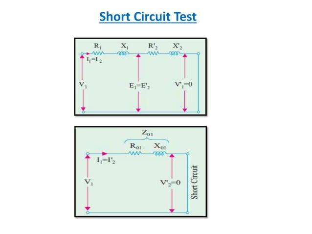
Figure 4.5 — Short-Circuit Test — Circuit Referred to the Primary (Series Branch Only)
عند توصيل حمل بالملف الثانوي، يمر تيار في الممانعة الداخلية للمحول، فيتغير جهد الخرج.
حيث \(V_{NL}\) جهد اللاحمل و \(V_{FL}\) جهد الحمل الكامل.
Exact Phasor Relation Behind the Voltage-Drop Formulas
تُحل مسائل التنظيم على الدائرة المكافئة التقريبية (Figure 2.5) بعد إحالتها إلى جانب واحد (هنا الثانوي) وإهمال فرع المغنطة. عندئذ يمر التيار نفسه في \(R_{eq}\) و\(X_{eq}\) على التوالي، ونكتب قانون KVL بصيغة phasors:
هذه هي المعادلة التي تستخدمها الأمثلة 2.6 و2.7 و3.2 مباشرة بالأعداد المركبة (ويعاد ترتيبها \(V_2=V_1'-I(R_{eq}+jX_{eq})\) عند طلب جهد الحمل كما في المثال 3.2). أما القانونان التقريبيان التاليان فهما مسقط هذه المعادلة على محور \(V_2\)، ويُشتقان خطوة بخطوة في المخطط التفاعلي أسفل الشكلين 5.3 و5.4.
Approximate Voltage Drop
تقريب هبوط الجهد مع الحمل ذي معامل القدرة المتأخر Lagging PF:
ومع معامل القدرة المتقدم Leading PF:
⚠️ تنبيه
هذه معادلات تقريبية، ويجب الالتزام بتعريف Voltage Regulation واتفاقية الإشارات المعتمدة في المسألة.
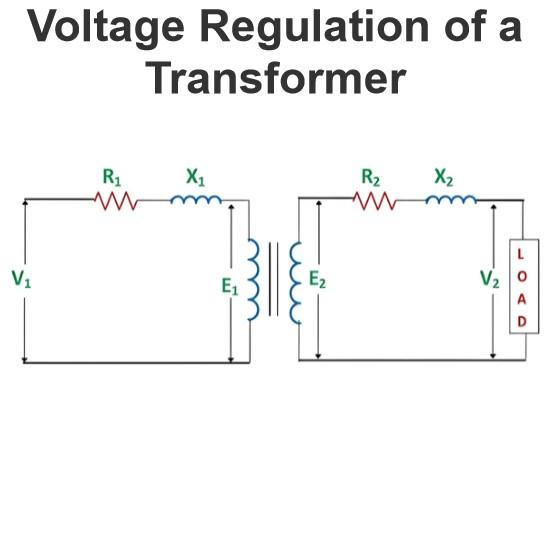
Figure 5.1 — Voltage Regulation Concept
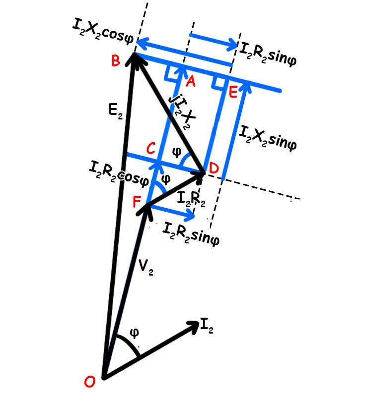
Figure 5.2 — Voltage Regulation at Different Power Factors
💡 إشارة التنظيم
في الصيغة التقريبية \(\%VR\approx\dfrac{I\,(R_{\text{eq}}\cos\phi\pm X_{\text{eq}}\sin\phi)}{V_2}\times100\): الإشارة + للحمل المتأخر (lagging) و− للمتقدم (leading). وعند \(PF=1\) يختفي حد المفاعلة، ومع الحمل المتقدم قد يصبح التنظيم سالبًا. وكل ما قلّ \(\%VR\) كان أفضل.
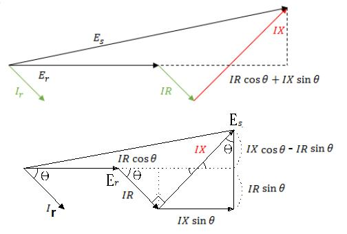
Figure 5.3 — Phasor Diagram for Voltage Drop — IR cosθ + IX sinθ
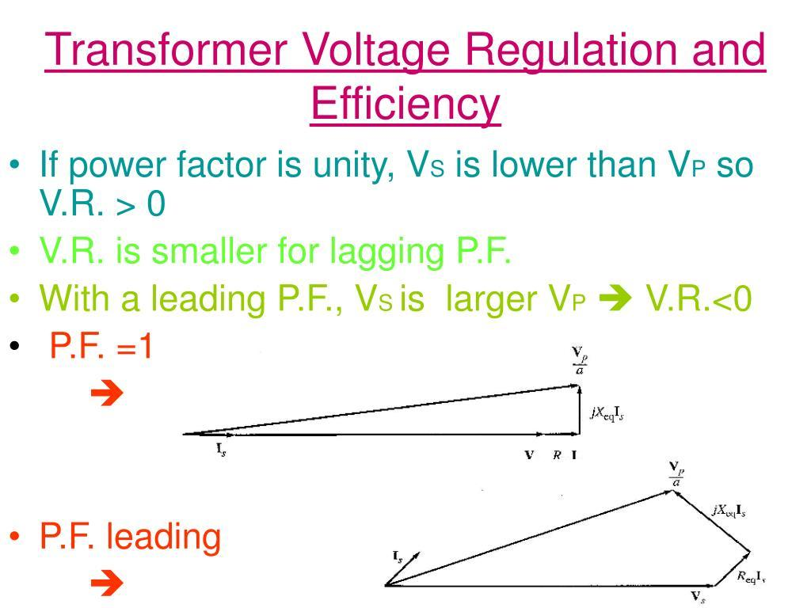
Figure 5.4 — Regulation at Unity and Leading PF (V₂ may exceed V₁ → VR < 0)
Deriving the Voltage-Drop Formulas from the Phasor Diagram
في الشكل 5.3: التيار يصنع الزاوية \(\varphi\) مع \(V_2\)، والمتجه \(IR_{eq}\) موازٍ للتيار فمسقطه على محور \(V_2\) هو \(IR_{eq}\cos\varphi\)، أما \(jIX_{eq}\) فيتقدم على التيار بـ \(90^\circ\) فمسقطه هو \(IX_{eq}\sin\varphi\) (يُطرح للحمل المتقدم لأن \(jIX_{eq}\) يميل نحو الوراء). بجمع المسقطين:
شروط الاستخدام: (1) \(I\) و\(R_{eq}\) و\(X_{eq}\) و\(V\) كلها على نفس الجانب (ولا تُخلط بقيم مُحالة إلى الجانب الآخر)؛ (2) \(\varphi\) هنا هي القيمة الموجبة لزاوية PF (الإشارة ± تحمل نوع الحمل)؛ (3) \(\Delta V\ll V_2\) أي الزاوية بين \(V_1'\) و\(V_2\) صغيرة، فالمركبة العمودية \(I(X_{eq}\cos\varphi\mp R_{eq}\sin\varphi)\) تؤثر من الدرجة الثانية فقط (في المثال 3.4 بحمل متأخر قيمتها \(6.85\) V وتضيف \(\approx0.04\) V فقط إلى \(|V_1'|\))؛ (4) عند حمل جزئي \(xI_{FL}\) يتناسب \(\Delta V\) مع \(x\).
الربط بتعريف التنظيم: عند اللاحمل (\(I=0\)) يكون جهد الثانوي \(V_{NL}=V_1'\)، وعند الحمل \(V_{FL}=V_2\). إذن \(\%VR=\dfrac{V_1'-V_2}{V_2}\times100\approx\dfrac{\Delta V}{V_2}\times100\)، فيكون التنظيم موجبًا إذا كان \(\Delta V>0\) وسالبًا إذا كان \(\Delta V<0\) (حمل متقدم قوي). جرّب الحالات الثلاث في المخطط التالي.
Worked Examples — Voltage Regulation
Example 2.6Lec 2, p.28
Question
15 kVA, 2300/230 V transformer: \(R_1=2.5,X_1=10,R_2=0.02,X_2=0.09\ \Omega\). What primary voltage keeps the secondary at 230 V at full load and 0.8 PF lagging?
Given
\(V_2=230\) V, \(I_2=\tfrac{15000}{230}=65.22\) A at \(-36.87^\circ\), \(n=0.1\).
Solution
\[ \begin{aligned}I_2^{\prime}&=0.1(65.22)=6.522\angle-36.87^\circ\text{ A}\\[0.75em] R_{eq}&=2.5+\tfrac{0.02}{0.01}=4.5\ \Omega,\quad X_{eq}=10+\tfrac{0.09}{0.01}=19\ \Omega\\[0.75em] V_1&=2300+6.522\angle-36.87^\circ(4.5+j19)=2397.8+j81.5\end{aligned} \]
Example 2.7Lec 2, p.29
Question
212 kVA single-phase transformer, \(N_1/N_2=8\); primary \(0.85+j4.8\ \Omega\), secondary \(0.012+j0.07\ \Omega\). Find the primary voltage that circulates 150 A in the short-circuited secondary (ignore magnetising current).
Given
\(n=\tfrac18,\ I_2=150\) A, \(V_2=0\).
Solution
\[ \begin{aligned}I_2^{\prime}&=\tfrac{150}{8}=18.75\text{ A}\\[0.75em] Z_{eq}&=(0.85+0.768)+j(4.8+4.48)=1.618+j9.28\ \Omega\\[0.75em] V_1&=18.75(1.618+j9.28)=30.3+j174\text{ V}\\[0.75em] |V_1|&=18.75\sqrt{1.618^2+9.28^2}=176.6\text{ V}\end{aligned} \]
Discussion
Source discrepancy: Lec 2 p.29 writes \(V_1=176.625+j174\) and \(247.9\angle44.5^\circ\). The real part should be \(18.75\times1.618=30.3\); 176.6 is the magnitude. Sheet 2 #8 gives 176.6 V, which agrees with this solution.
Example 3.2Lec 3, p.33
Question
A 40 kVA, 6600/250 V, 50 Hz transformer: total reactance 35 Ω referred to primary; R₁ = 10 Ω, R₂ = 0.02 Ω. Find full-load regulation at 0.8 PF lagging.
Given
40 kVA, 6600/250 V, 50 Hz; \(X_{eq1}=35\ \Omega\); \(R_1=10\ \Omega,\ R_2=0.02\ \Omega\); PF 0.8 lagging.
Required
Full-load voltage regulation.
Solution
\[ \begin{aligned}n&=\tfrac{250}{6600}=\tfrac{5}{132},\quad R_{eq}=10+\tfrac{0.02}{(5/132)^2}=23.94\ \Omega\\[0.75em] I_2'&=\tfrac{40\times10^3}{6600}=6.06\angle-36.86^\circ\text{ A}\\[0.75em] V_2'&=6600-6.06\angle-36.86^\circ(23.94+j35)\approx6357\text{ V}\\[0.75em] VR&=\tfrac{6600-6357}{6357}\times100=\boxed{3.82\%}\end{aligned} \]
Example 3.4Lec 3, p.35
Question
Single-phase transformer, ratio 5:1; primary \(0.4+j1.2\ \Omega\), secondary \(0.01+j0.04\ \Omega\). It delivers 125 A at 600 V at (i) 0.8 PF lagging, (ii) 0.8 PF leading. Find the primary voltage and the regulation.
Given
\(n=0.2,\ I_2=125\) A, \(V_2=600\) V.
Required
\(V_1\), VR for both cases.
Solution
\[ \begin{aligned}R_{eq2}&=0.01+0.4(0.2)^2=0.026\ \Omega,\quad X_{eq2}=0.04+1.2(0.2)^2=0.088\ \Omega\\[0.75em] \text{Lag: }V_1^{\prime}&=600+125(0.026\times0.8+0.088\times0.6)=609.2\text{ V}\\[0.75em] \text{Lead: }V_1^{\prime}&=600+125(0.026\times0.8-0.088\times0.6)=596.0\text{ V}\\[0.75em] V_1&=V_1^{\prime}/0.2\end{aligned} \]
Discussion
Lagging loads give positive regulation; a leading load can make the secondary voltage rise above its no-load value.
Per-Unit System
تُختار عادةً \(S_{\text{base}}=S_{\text{rated}}\) و\(V_{\text{base}}=V_{\text{rated}}\)، ويكون \(Z_{\text{pu}}\) للمحول نفسه من جانب الجهد العالي أو المنخفض. وعند وجود محولات في النظام تُحسب القيم الأساسية لكل منطقة بنسب اللفات، ثم تُجمع الدائرة بوحدات p.u. وتُحسب \(P_{pu}=I_{pu}^2R_{pu}\) و\(P=P_{pu}S_{\text{base}}\). وفي الأنظمة ثلاثية الطور: \(Z_{\text{base}}=V_{LL,\text{base}}^2/S_{\text{base}}\).
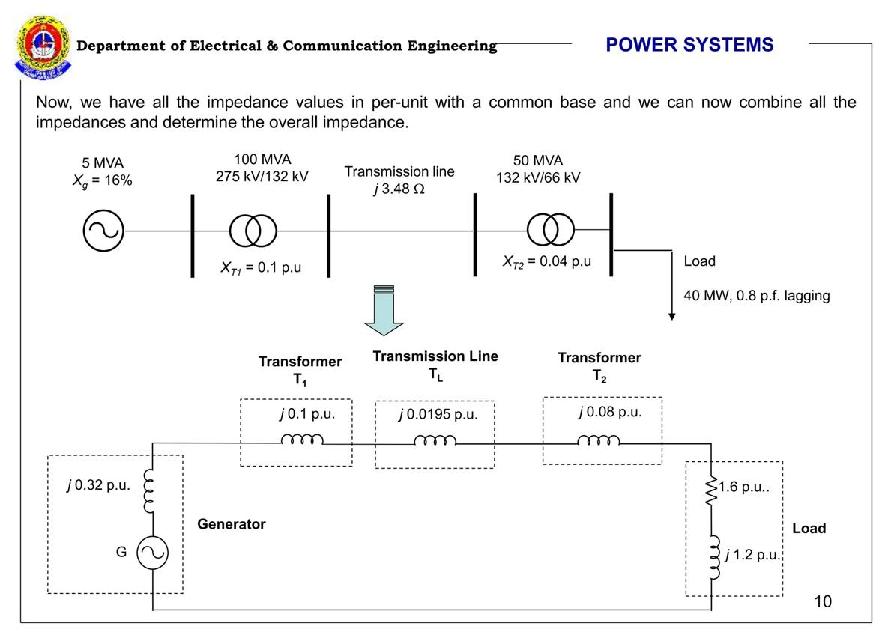
Figure 5.5 — Combining Per-Unit Impedances of a Multi-Region System
Worked Example — Per-Unit
Example 4.1(a)Lec 4, p.42
Question
20 kVA, 8000/240 V, 60 Hz transformer: R_c1 = 159 kΩ, X_m1 = 38.4 kΩ, R_eq1 = 38.4 Ω, X_eq1 = 192 Ω. Sketch the per-unit circuit (S_base = 20000 VA, V_base = 8000 V).
Given
20 kVA, 8000/240 V, 60 Hz; \(R_{c1}=159\) k\(\Omega\), \(X_{m1}=38.4\) k\(\Omega\), \(R_{eq1}=38.4\ \Omega\), \(X_{eq1}=192\ \Omega\); \(S_{base}=20\) kVA, \(V_{base}=8000\) V.
Required
Per-unit equivalent circuit.
Solution
\[ \begin{aligned}Z_{base}&=\tfrac{8000^2}{20000}=3200\ \Omega\\[0.75em] Z_{eq,pu}&=\tfrac{38.4+j192}{3200}=\boxed{0.012+j0.06\text{ pu}}\\[0.75em] R_{c,pu}&=\tfrac{159\times10^3}{3200}=49.6875\text{ pu},\quad X_{m,pu}=\tfrac{38400}{3200}=12\text{ pu}\end{aligned} \]
Percentage Impedance (%Z)
قيمة %Z المرتفعة تعني هبوط جهد أكبر وتنظيمًا أسوأ، بينما تعني %Z المنخفضة تيار عطل محتمل أكبر.
Worked Example — %Z
%Z Example 1Lec 4, p.45
Question
A 24 kVA, 2400/240 V transformer has a measured impedance voltage of 72 V on the HV winding. Find %Z and the actual impedance.
Given
\(V_{rated}=2400\) V, \(V_{Z}=72\) V, \(S=24\) kVA.
Solution
\[ \begin{aligned}\%Z&=\tfrac{72}{2400}\times100=3\%\\[0.75em] I_{FL}&=\tfrac{24000}{2400}=10\text{ A},\quad Z=\tfrac{72}{10}=7.2\ \Omega\end{aligned} \]
Tap Changer
يغيّر Tap Changer نسبة اللفات (عادةً بحدود \(\pm5\%\) على ملف الجهد العالي) للتحكم في جهد الخرج. وعند ثبات \(V_1\): \(V_2\propto \dfrac{1}{N_1}\)، أي أن تقليل \(N_1\) يرفع \(V_2\) (مثال: لرفع \(V_2\) بنحو 2.5% يُختار tap \(-2.5\%\)). النوع Off-load يتطلب فصل المحول، أما On-load فيغيّر الـ tap أثناء مرور الحمل. ويجب التأكد دائمًا من اصطلاح الـ tap في المصنّع.
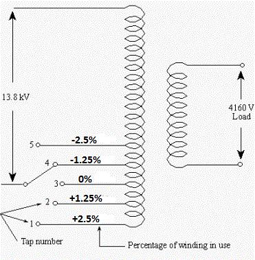
Figure 5.6 — Tap Changer — Tap Number and Percentage of Winding in Use
Worked Example — Tap Selection
Example 4.4Lec 4, p.47
Question
A 13800/4160 V transformer has primary taps −5%, −2.5%, nominal, +2.5%, +5%. The secondary falls to 4050 V; which tap restores 4160 V (supply constant)?
Given
13800/4160 V; primary taps −5, −2.5, 0, +2.5, +5 %; supply constant; \(V_2\) has fallen to 4050 V.
Required
Tap that restores 4160 V.
Solution
\[ \begin{aligned}\Delta V_2&=\tfrac{4160-4050}{4160}\times100=2.6\%\simeq2.5\%\\[0.75em] V_2&\propto\tfrac{1}{N_1}\ \Rightarrow\ \text{reduce }N_1\ \Rightarrow\ \boxed{\text{tap}=-2.5\%}\end{aligned} \]
Autotransformer
يتكون Autotransformer من ملف واحد متصل (جزء منه مشترك)، فتنتقل القدرة جزئيًا بالحث وجزئيًا بالتوصيل المباشر، ولا يوجد عزل كهربائي بين الابتدائي والثانوي.
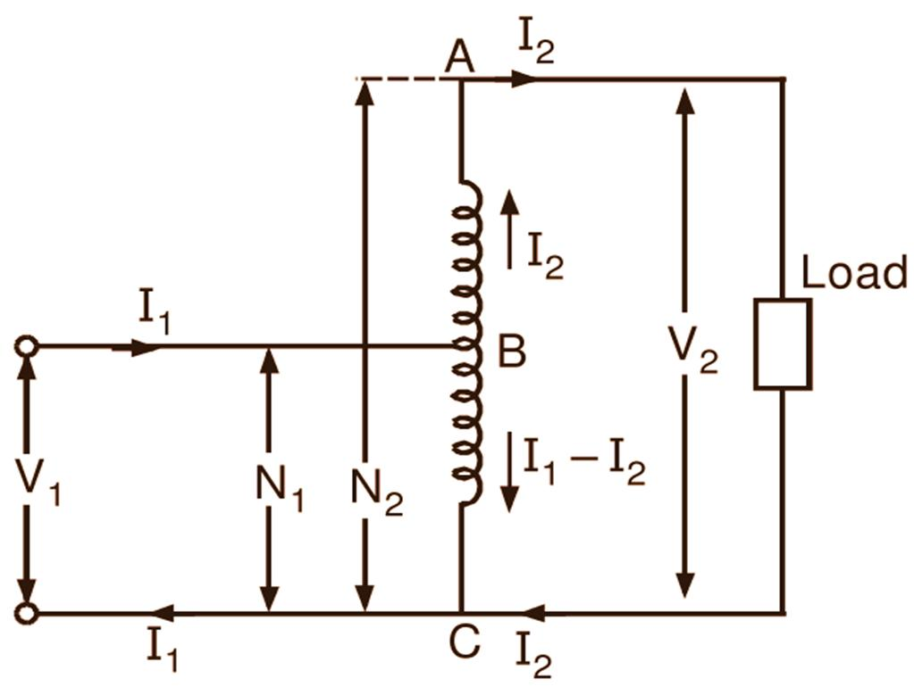
Figure 5.7 — Autotransformer — Current Distribution (I₁, I₂, I₁ − I₂)
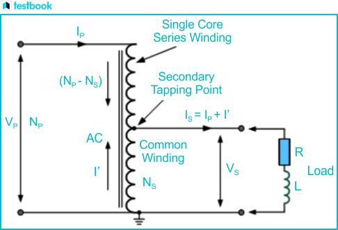
Figure 5.8 — Autotransformer — Common Winding and Series Winding
💡 مثال
محول 100 kVA (2000/200 V) موصول كـ step-up autotransformer من 2000 V إلى 2200 V: تيار الحمل 500 A، فيكون \(S_{\text{auto}}=2200\times500=1100\) kVA أي 11 ضعف قدرة المحول العادي، والمنقول بالحث 100 kVA فقط.
Advantages / Limitations / Applications
- المزايا: نحاس أقل وحجم أصغر وفقد أقل وتنظيم جهد أفضل، خصوصًا عندما تكون النسبة قريبة من الواحد.
- العيوب: لا عزل جلفاني؛ عطل أو انقطاع في الملف قد يعرّض الحمل لجهد المصدر.
- التطبيقات: منظّم جهد (Variac)، رفع جهد المغذيات، وبدء تشغيل المحركات بجهد مخفض.
- ارسم توصيلة الـ autotransformer وحدد الجزء المشترك واتجاهات التيار قبل استخدام العلاقات.
Source check
The source writes \(S_W=S(1-K)\) and then substitutes 1.1, which gives a negative value. The formula holds only if \(K=V_L/V_H=0.909\); with \(K=V_H/V_L=1.1\) it must be \(1-1/K\). Both give 100 kVA, the rating of the ordinary transformer.
Worked Examples — Autotransformers
Example 4.5Lec 4, p.49
Question
A 100 kVA, 2000/200 V two-winding transformer is connected as a step-up autotransformer with a 2000 V source. Find the autotransformer kVA rating.
Given
100 kVA, 2000/200 V two-winding transformer; step-up autotransformer; source 2000 V.
Required
Autotransformer kVA rating.
Solution
\[ \begin{aligned}V_H&=2000+200=2200\text{ V},\quad n=\tfrac{2200}{2000}=1.1\\[0.75em] S_{auto}&=500\times2200=550\times2000=\boxed{1100\text{ kVA}},\quad \tfrac{S_{auto}}{S_{ord}}=11\\[0.75em] S_{W}&=S_{auto}\left(1-\tfrac{V_L}{V_H}\right)=1100\left(1-\tfrac{2000}{2200}\right)=100\text{ kVA}\end{aligned} \]
Example 4.6Lec 4, p.50
Question
A 500/250 V autotransformer supplies 10 kW at unity PF. Find n, I_s, I_p, kVA, transformed and conducted power.
Given
500/250 V autotransformer supplying 10 kW at unity PF.
Required
(a) \(n\) (b) \(I_s\) (c) \(I_p\) (d) kVA (e) transformed power (f) conducted power.
Solution
\[ \begin{aligned}n&=\tfrac{250}{500}=\tfrac12,\quad I_p=\tfrac{10\times10^3}{500}=20\text{ A},\quad I_s=\tfrac{10\times10^3}{250}=40\text{ A}\\[0.75em] S_{auto}&=20\times500=10\text{ kVA},\quad P_{trans}=20\times250=5\text{ kVA}\\[0.75em] P_{cond}&=S_{auto}-S_{ord}=10-5=\boxed{5\text{ kVA}}\end{aligned} \]
Example 4.7Lec 4, p.51
Question
A 400/100 V, 5 kVA two-winding transformer is used as an autotransformer to supply 400 V from a 500 V source. Find primary and secondary currents, ratio, kVA, transformed and conducted power.
Given
Series winding 100 V carries \(\tfrac{5000}{100}=50\) A; common winding 400 V carries \(\tfrac{5000}{400}=12.5\) A.
Required
\(I_p,I_s,n,S_{auto},S_{trans},S_{cond}\).
Solution
\[ \begin{aligned}I_p&=50\text{ A},\quad I_s=50+12.5=62.5\text{ A},\quad n=\tfrac{400}{500}=0.8\\[0.75em] S_{auto}&=400(62.5)=500(50)=25\text{ kVA}\\[0.75em] S_{trans}&=12.5(400)=5\text{ kVA},\quad S_{cond}=25-5=20\text{ kVA}\end{aligned} \]
Example 4.7 (b)Lec 4, p.51
Question
The same 400/100 V, 5 kVA transformer is used as an autotransformer to supply 500 V from a 400 V source.
Given
Same winding currents: 50 A (100 V winding), 12.5 A (400 V winding).
Required
Same six quantities as 4.7.
Solution
\[ \begin{aligned}I_p&=50+12.5=62.5\text{ A},\quad I_s=50\text{ A},\quad n=\tfrac{500}{400}=1.25\\[0.75em] S_{auto}&=500(50)=25\text{ kVA},\quad S_{trans}=400(12.5)=5\text{ kVA},\quad S_{cond}=20\text{ kVA}\end{aligned} \]
Example 4.8 (Homework)Lec 4, p.31
Question
A 25 kVA, 2500/250 V two-winding transformer is connected as a step-up autotransformer from a 2500 V source and supplies rated load current at unity PF. Find the source current, load current, autotransformer kVA, transformed and conducted power.
Given
Windings: 2500 V at \(\tfrac{25000}{2500}=10\) A; 250 V at \(\tfrac{25000}{250}=100\) A.
Required
Source current, load current, \(S_{auto}\), \(S_{trans}\), \(S_{cond}\).
Solution
\[ \begin{aligned}V_H&=2500+250=2750\text{ V},\quad I_{load}=100\text{ A},\quad I_{source}=100+10=110\text{ A}\\[0.75em] S_{auto}&=2750(100)=2500(110)=275\text{ kVA}\\[0.75em] S_{trans}&=2500(10)=25\text{ kVA},\quad S_{cond}=275-25=250\text{ kVA}\end{aligned} \]
Discussion
Source discrepancy: p.31 lists the “primary current” as 10 A, but 10 A is the common-winding current. Its own check \(2500\times110=275\) kVA requires a source current of 110 A.
هنا ننتقل من المحول إلى تحليل الدوائر الكهربائية التي تحتوي على مقاومات وملفات ومكثفات.
Impedance
حيث \(f\) التردد (Hz)، \(L\) المحاثة (H)، \(C\) السعة (F)، و\(X_L,X_C\) بالأوم. تزداد \(X_L\) مع التردد (الملف يعاند تغيّر التيار)، وتقل \(X_C\) معه (المكثف يمرّر التردد العالي بسهولة أكبر). وبالصيغة المركبة: \(Z_R=R\)، \(Z_L=jX_L=j\omega L\)، \(Z_C=-jX_C=\dfrac{1}{j\omega C}\)، حيث \(j\) يعني دوران \(+90^\circ\) في المستوى المركب، وحيث \(\omega=2\pi f\).
في دائرة RLC على التوالي: \(X = X_L - X_C\)
- إذا كان \(X > 0\): الدائرة حثية Inductive.
- إذا كان \(X < 0\): الدائرة سعوية Capacitive.
- إذا كان \(X = 0\): تتعادل المفاعلتان Resonance.
Ohm's Law in AC Circuits
💡 ملاحظة
عند استخدام قيم RMS، تكون النتائج مناسبة لحسابات القدرة المعتادة في الأنظمة الجيبية.
عند القسمة بالصيغة القطبية تُقسم المقادير وتُطرح الزوايا، فتكون زاوية الممانعة \(\angle Z=\varphi\) هي نفسها فرق الطور بين الجهد والتيار. ومنه: المقاومة \(\angle Z=0^\circ\)، والملف \(\angle Z=+90^\circ\) (التيار متأخر)، والمكثف \(\angle Z=-90^\circ\) (التيار متقدم)، وفي دائرة \(R\)–\(L\) \(\varphi=\tan^{-1}(X/R)\) بين \(0^\circ\) و\(90^\circ\). ويُحسب معامل القدرة من \(\cos\varphi\).
Phase Relationship
Definition — Phase Behavior of R, L, C
1. Resistor — المقاومة: الجهد والتيار متفقان في الطور. \(\phi = 0°\)، \(PF = 1\).
2. Inductor — الملف الحثي: التيار يتأخر عن الجهد بمقدار \(90°\). Current lags Voltage.
3. Capacitor — المكثف: التيار يتقدم على الجهد بمقدار \(90°\). Current leads Voltage.
Phasor Diagram
الـ Phasor هو تمثيل لمقدار الكمية الجيبية وزاوية طورها. طريقة الحل:
- اختر Reference ثابتًا، وغالبًا يكون الجهد.
- اكتب المرجع مثلًا: \(\underline{V} = V\angle 0°\)
- حدد زاوية التيار طبقًا لطبيعة الحمل.
- اجمع المتجهات جمعًا متجهيًا، وليس جمعًا حسابيًا عاديًا.
⚠️ انتبه
قد تظهر علاقة مجموع المربعات \(R = \sqrt{A^2 + B^2}\) في مثلث الممانعة أو مثلث القدرة أو في جمع متجهات متعامدة. يجب تحديد الكميات قبل اختيار القانون.
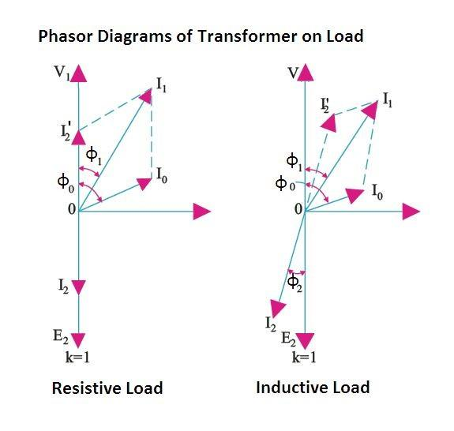
Figure 6.1 — Phasor Representation of AC Quantities
Sinusoids, RMS & the Phasor Method
زاوية الطور علاقة زمنية وليست فرقًا في السعة، ولا تُستخدم القيم العظمى \(V_m, I_m\) في \(P=VI\cos\phi\) إلا بعد تعديل الصيغة. خطوات الحل بالـ phasors:
- اكتب كل المصادر بنفس التردد كـ RMS phasors.
- اختر مرجعًا (Reference).
- حوّل R وL وC إلى ممانعات مركبة: \(R,\ j\omega L,\ \dfrac{1}{j\omega C}\).
- طبّق KCL وKVL وقانون أوم بصيغتها المركبة.
- اجمع/اطرح بالصيغة المستطيلة واضرب/اقسم بالصيغة القطبية.
- حوّل النتيجة إلى الزمن إذا طُلب.
⚠️ KCL في دوائر AC
عند عقدة فيها عدة فروع يجب جمع التيارات كـ phasors: \(\underline{I}_T=\underline{I}_1+\underline{I}_2+\cdots\)، لأن جمع المقادير فقط يعطي نتيجة خاطئة عند اختلاف زوايا الطور. وفي الملف الحقيقي زاوية الطور ليست بالضرورة \(90^\circ\) لوجود مقاومة.
Conventions — used in every phasor diagram of this file
- كل phasor يمثل القيمة الفعالة RMS وزاويتها: \(\underline V=\dfrac{V_m}{\sqrt2}\angle\theta\).
- الزوايا الموجبة عكس عقارب الساعة من المرجع؛ لذلك الكمية المتأخرة (lagging) تُرسم باتجاه عقارب الساعة، والمتقدمة (leading) عكسه.
- \(\varphi=\theta_v-\theta_i\): موجبة عندما يتأخر التيار عن الجهد.
- الجمع والطرح المتجهي يتم رأسًا بذيل، والطرح يعني جمع المتجه المعكوس.
- المرجع اختياري لكن يُختار حسب المسألة: التيار في دوائر التوالي (تيار مشترك)، والجهد في الدوائر المتوازية أو عندما يكون جهد الحمل وPF معلومين. تدوير المخطط كله لا يغيّر الزوايا النسبية.
- الجهود والتيارات في الرسم لها غالبًا مقياسا رسم مختلفان، وقد يُكبَّر هبوط الجهد الصغير لوضوح الرسم؛ وسيُذكر ذلك في كل مخطط.
Building a Series R–L Phasor Diagram
نطبق خطوات الحل السابقة على الدائرة المكافئة في اختبار القصر (المثال 2.7). المخطط الناتج هو مثلث الجهد، المشابه لمثلث الممانعة \((R,\ X,\ |Z|)\) والمستخدم في Section 04.
توجد ثلاثة أنواع رئيسية من القدرة في دوائر التيار المتردد:
Definition — Power Types
- القدرة الفعالة \(P\): القدرة التي تتحول إلى شغل مفيد أو حرارة.
- القدرة غير الفعالة \(Q\): القدرة المرتبطة بتبادل الطاقة مع المجالات الكهربائية والمغناطيسية.
- القدرة الظاهرية \(S\): حاصل ضرب الجهد في التيار الفعال RMS في الحالة أحادية الطور الجيبية.
من أين تأتي هذه المعادلات؟ نحلل التيار بالنسبة للجهد إلى مركبتين: مركبة في نفس الطور \(I\cos\phi\) تنتج قدرة فعلية، ومركبة متعامدة \(I\sin\phi\) تتبادل الطاقة مع المجال المغناطيسي أو الكهربائي؛ وضرب كل منهما في \(V\) (RMS) يعطي \(P\) و\(Q\). وهي نفس فكرة \(I_c\) و\(I_m\) في Section 09 (حيث \(P_0=V_1I_c\)). ومن \(P\) و\(Q\) نحصل على \(\tan\phi=\dfrac{Q}{P}\) أي \(Q=P\tan\phi\) (ستُستخدم في Section 08). اصطلاح الإشارة: \(Q>0\) للحمل الحثي (تيار متأخر) و\(Q<0\) للحمل السعوي. الوحدات: \(P\) بالواط، \(Q\) بالفار (var)، \(S\) بالفولت-أمبير (VA).
في الحمل المقاومي المثالي: \(\phi = 0°\)، \(Q = 0\)، \(PF = 1\). أما الحمل الحثي فيسحب قدرة غير فعالة حثية، والحمل السعوي يوفر تعويضًا سعويًا.
هذه نقطة مهمة جدًا في الجزء التطبيقي، خصوصًا في المصانع التي تستخدم المحركات والمحولات. الأحمال الحثية تحتاج إلى قدرة غير فعالة لإنشاء المجال المغناطيسي، وبالتالي يمكن أن تسحب تيارًا أكبر من المطلوب.
كلما انخفض معامل القدرة، زادت القدرة الظاهرية المطلوبة لنقل القدرة الفعالة نفسها:
Example — Factory Power Factor ImprovementLec 3 & 4 notes
Question
A factory requires 400 kW of active power. Compare the apparent power required at PF = 0.8 and PF = 0.95.
Given
\(P=400\) kW; \(PF_1=0.8\); \(PF_2=0.95\).
Required
Apparent power \(S\) at each power factor.
Solution
\[ \begin{aligned}S&=\frac{P}{PF}\\[0.75em] S_1&=\frac{400}{0.8}=500\text{ kVA}\\[0.75em] S_2&=\frac{400}{0.95}\approx421.1\text{ kVA}\end{aligned} \]
Discussion
The active power remains 400 kW, but the apparent power drops from 500 to ≈ 421.1 kVA. At constant supply voltage this means lower current and reduced \(I^2R\) losses in the network.
Capacitor Bank Calculation
يتم تحسين معامل القدرة عادةً باستخدام مجموعة مكثفات Capacitor Bank توصل بالتوازي مع الأحمال:
حيث:
- \(P\): القدرة الفعالة.
- \(\phi_1\): زاوية الطور قبل التعويض.
- \(\phi_2\): زاوية الطور المطلوبة بعد التعويض.
- \(Q_c\): قدرة المكثفات المطلوبة بوحدة kVAR.
من أين تأتي المعادلة؟ المكثف المتصل بالتوازي لا يستهلك قدرة فعلية، فتبقى \(P\) ثابتة بينما تنقص القدرة غير الفعالة من \(Q_1=P\tan\phi_1\) إلى \(Q_2=P\tan\phi_2\)؛ وتعوّض المكثفات الفرق: \(Q_c=Q_1-Q_2=P(\tan\phi_1-\tan\phi_2)\). وإذا طُلبت قيمة السعة فمن \(Q_c=\dfrac{V^2}{X_C}=2\pi fCV^2\) نحصل على \(C=\dfrac{Q_c}{2\pi fV^2}\) (لنظام أحادي الطور، \(V\) هو الجهد الفعال على المكثف). وفي النظام ثلاثي الطور تُقسَّم \(Q_c\) الكلية على الأوجه الثلاثة ويُراعى توصيل المكثفات (نجمة أو مثلث) عند اختيار الجهد.
⚠️ تحذير مهم
يجب عدم المبالغة في التعويض؛ لأن زيادة القدرة السعوية قد تؤدي إلى معامل قدرة متقدم ومشكلات في الجهد. حدود معامل القدرة والغرامات المالية تعتمد على تعريفة شركة الكهرباء.
Lagging, Leading & Why Low PF Matters
Definition — Power Factor Types
- Lagging: التيار يتأخر عن الجهد، وهو شائع في الأحمال الحثية كالمحركات والمحولات.
- Leading: التيار يتقدم على الجهد، وهو يرتبط بالسلوك السعوي.
- Unity: \(\phi=0\) و\(PF=1\).
⚠️ أثر انخفاض PF
عند ثبات القدرة الفعالة، انخفاض PF يعني تيارًا أكبر، فيزيد فقد \(I^2R\) وهبوط الجهد وحمل كابلات ومحولات ولوحات التوزيع، وقد تفرض شركة الكهرباء رسومًا إضافية حسب التعريفة. كذلك فإن PF الحمل الثانوي للمحول لا يساوي PF عند الابتدائي تمامًا بسبب تيار المغنطة وفقد القلب.
لا يُفترض أن PF = 0.95 هو حد عام؛ فالحد المطلوب وطريقة الحساب تحددهما التعريفة وشروط التوصيل.
No-Load Current
حتى عندما يكون الملف الثانوي مفتوحًا ولا يوجد حمل، يسحب الملف الابتدائي تيارًا صغيرًا يسمى No-Load Current:
ويتكون تقريبًا من مركبتين:
Definition — No-Load Current Components
- \(I_c\): مركبة مرتبطة بفقد القلب الحديدي (Core-Loss Component).
- \(I_m\): مركبة المغنطة اللازمة لإنشاء الفيض (Magnetizing Component).
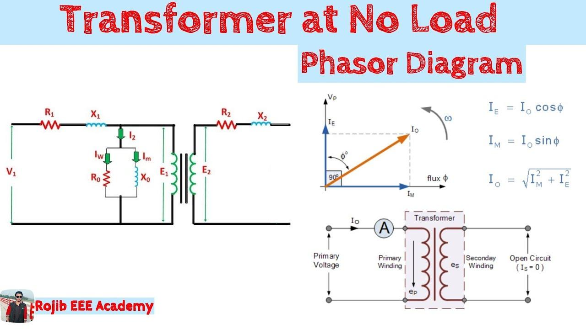
Phasor Diagram — No-Load Current Components
💡 ملاحظة مهمة
فصل الحمل الثانوي لا يعني أن التيار الابتدائي يساوي صفرًا. حتى بدون حمل، يسحب المحول تيار No-Load Current لإنشاء الفيض المغناطيسي في القلب ولتعويض فقد القلب الحديدي.
Phasor Construction of the No-Load Current
نتعامل مع \(I_0\) كمتجه له مركبتان متعامدتان بالنسبة لـ \(V_1\): \(I_c\) في نفس طور \(V_1\) (تغذي فقد القلب) و\(I_m\) متأخرة عنه بـ \(90^\circ\) (تنشئ الفيض). بحساب المركبتين من الزاوية \(\varphi_0\) بين \(V_1\) و\(I_0\):
- \(V_1\): جهد الابتدائي المطبّق (V، RMS)؛ \(I_0\): تيار اللاحمل (A)؛ \(\varphi_0\): زاوية PF اللاحمل (\(I_0\) يتأخر عن \(V_1\))؛ \(P_0\): القدرة الداخلة عند اللاحمل \(\approx\) فقد القلب (W).
- \(I_c\) هي نفسها \(I_w\) (Working/Core-loss component) في الشكل 9.1، و\(I_m\) هي Magnetizing Current.
- الشروط: تُهمل مقاومة الملف الابتدائي ومفاعلة التسرب عند اللاحمل، وفرع \(R_c\parallel jX_m\) على التوازي فكلتا المركبتين تحت جهد \(V_1\) نفسه؛ و\(R_c,X_m\) تخصان الجانب الذي قيس عنده \(V_1\) (وتُحال بـ \(a^2\)).
في المخطط التفاعلي التالي نبني \(I_0\) خطوة بخطوة من \(V_1\) والفيض \(\Phi\) باستخدام بيانات المثال 32.9(b).
Worked Examples — No-Load Current
Example 32.9 (a, b)Lec 2, p.17
Question
(a) A 2200/200 V transformer draws 0.6 A no-load and absorbs 400 W; find the magnetising and iron-loss currents. (b) A 2200/250 V transformer takes 0.5 A at PF 0.3 on open circuit; find the magnetising and working components.
Given
(a) \(V_1=2200\) V, \(I_0=0.6\) A, \(P_0=400\) W. (b) \(I_0=0.5\) A, \(\cos\phi_0=0.3\).
Required
\(I_c\) and \(I_m\) in each case.
Solution
\[ \begin{aligned}\text{(a) }\cos\phi_0&=\tfrac{400}{2200(0.6)}=0.303,\ \phi_0=72.36^\circ\\[0.75em] I_c&=0.6\cos\phi_0=0.182\text{ A},\quad I_m=0.6\sin\phi_0=0.572\text{ A}\\[0.75em] \text{(b) }I_c&=0.5(0.3)=0.15\text{ A},\quad I_m=\sqrt{0.5^2-0.15^2}=0.477\text{ A}\end{aligned} \]
Discussion
The source prints 0.476 A in (b); \(\sqrt{0.2275}=0.4770\), so the difference is truncation.
Example 2.1Lec 2, p.21
Question
440/110 V single-phase transformer: no-load current 5 A at 0.2 PF lagging; the secondary supplies 120 A at 0.8 PF lagging. Neglect winding resistance and reactance. Find the primary current.
Given
440/110 V; \(I_0=5\) A at 0.2 PF lag; \(I_2=120\) A at 0.8 PF lag; winding drops neglected.
Required
Primary current \(I_1\) (and phasor diagram).
Solution
\[ \begin{aligned}n&=\tfrac{110}{440}=\tfrac14,\quad I_2'=120\times\tfrac14=30\angle-36.8^\circ\text{ A}\\[0.75em] I_0&=5\angle-78.4^\circ\text{ A}\ \ (\theta=\cos^{-1}0.2)\\[0.75em] I_1&=I_0+I_2'=\boxed{33.9\angle-42.41^\circ\text{ A}}\end{aligned} \]
Phasor Construction — Primary Current Under Load
يسحب الملف الابتدائي مركبتين: \(\underline I_0\) (تنشئ الفيض وتغطي فقد القلب، وتبقى تقريبًا ثابتة ما دام \(V_1\) ثابتًا) و\(\underline I_2'\) (تعادل mmf الثانوي: \(N_1I_2'=N_2I_2\))؛ ويجب جمعهما اتجاهيًا لأن لهما زاويتين مختلفتين. الإحالة إلى الابتدائي تغيّر مقدار تيار الحمل فقط وتُبقي زاويته. يطبّق المخطط التالي هذه المعادلة على المثال 2.1 (مع إهمال هبوط الجهد في الملفات).
Dot Convention
النقاط الموجودة على أطراف الملفات تحدد العلاقة اللحظية بين القطبيات (Instantaneous Polarity).
Definition — Dot Convention Rule
إذا دخل التيار إلى الطرف المنقّط للملف الابتدائي، يصبح الطرف المنقّط للملف الثانوي موجبًا لحظيًا بالنسبة للطرف الآخر، وفق اتفاقية النقاط واتجاهات الإشارة المعتمدة.
Dot Convention — Polarity Markings
تُستخدم هذه القاعدة لتحديد القطبية واتجاه الجهود والتيارات، خصوصًا عند توصيل الملفات أو تحليل دوائر المحولات.
⚠️ تطبيق عملي
عند التعامل مع مسائل المحولات، تأكد دائمًا من تحديد Dot Convention قبل كتابة معادلات KVL، لأن اتجاه الجهد المستحث يعتمد على موقع النقطة بالنسبة للتيار.
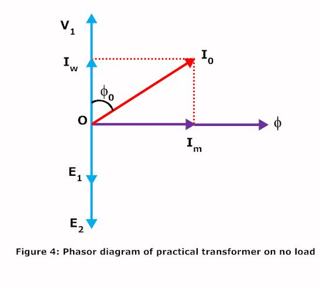
Figure 9.1 — Phasor Diagram of a Practical Transformer on No Load (I₀ = I_c + I_m)
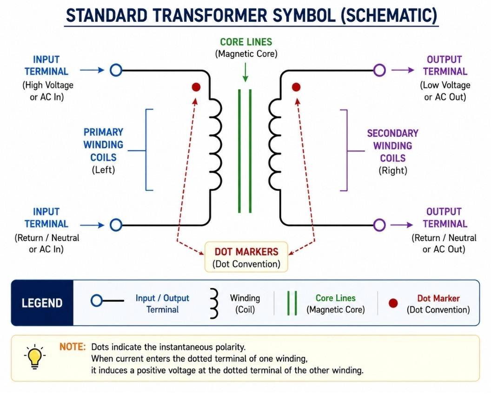
Figure 9.2 — Standard Transformer Symbol with Dot Markers (Instantaneous Polarity)
في الأنظمة ثلاثية الطور، نحتاج إلى التمييز بين Line Quantities وPhase Quantities.
Definition — Line & Phase Quantities
- \(V_L\): جهد الخط (Line Voltage).
- \(V_{ph}\): جهد الوجه (Phase Voltage).
- \(I_L\): تيار الخط (Line Current).
- \(I_{ph}\): تيار الوجه (Phase Current).
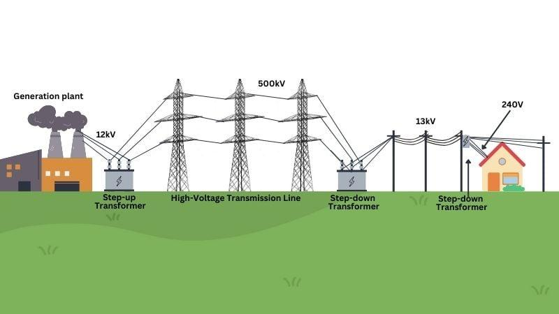
Three-Phase Transformer — Star & Delta Configurations
Star Connection (Y)
في التوصيلة النجمية المتزنة (Balanced Star):
Delta Connection (Δ)
في التوصيلة المثلثية المتزنة (Balanced Delta):
📌 قاعدة الحفظ السريعة
| Connection | Voltage | Current |
|---|
| Star (Y) | الجهد يتضاعف بـ \(\sqrt{3}\) | التيار متساوٍ |
| Delta (Δ) | الجهد متساوٍ | التيار يتضاعف بـ \(\sqrt{3}\) |
Why √3? Phasor Derivation of Line and Phase Relations
في النظام المتزن الأوجه الثلاثة متساوية المقدار ومتباعدة \(120^\circ\). كمية الخط هي فرق كميتي وجهين بحكم KVL (في النجمة) أو KCL (في المثلث)، وفرق متجهين متساويين الطول بينهما \(60^\circ\) يساوي \(2\cos30^\circ=\sqrt3\) أضعاف الطول (متتابعة abc):
والقدرة الكلية هي مجموع قدرات الأوجه الثلاثة: \(P=3V_{ph}I_{ph}\cos\varphi\)، حيث \(\varphi\) هي زاوية الحمل بين جهد الوجه وتيار الوجه (وليس بين جهد الخط وتيار الخط). في النجمة \(V_{ph}=V_L/\sqrt3\) و\(I_{ph}=I_L\)، وفي المثلث \(V_{ph}=V_L\) و\(I_{ph}=I_L/\sqrt3\)؛ وفي الحالتين \(P=\sqrt3\,V_LI_L\cos\varphi\). المخطط التالي يبني العلاقتين (القيم العددية توضيحية).
Three-Phase Power
القدرة في نظام ثلاثي الطور متزن (Balanced Three-Phase):
⚠️ ملاحظة
هذه العلاقات تخص نظامًا ثلاثي الطور متزنًا، مع استخدام قيم RMS. في مسائل الثلاثة أوجه، حدد Star أو Delta قبل تحويل قيم الخط والوجه.
Star-Delta Starting & Unbalanced Loads
يبدأ Star-Delta Starter تشغيل المحرك بتوصيل النجمة ثم يحوّله إلى المثلث، بشرط أن يكون المحرك مصمَّمًا للعمل مثلثًا على جهد الخط. في النجمة يتعرض كل ملف لجهد \(V_L/\sqrt{3}\)، فيقل تيار البدء وعزم البدء (تقريبًا إلى الثلث في الحالة المثالية، وتختلف القيم الفعلية حسب المحرك والشبكة). ويجب أن يكون التحويل مؤقتًا ومؤمَّنًا، ولا يناسب الأحمال التي تحتاج عزم بدء عاليًا.
⚠️ أنظمة غير متزنة
في الحمل غير المتزن احسب القدرة المركبة لكل وجه ثم اجمعها: \(S=\sum S_{ph}\)، ولا تستخدم \(\sqrt{3}V_LI_L\cos\phi\) مباشرةً.
التوافقيات هي مكونات جيبية تردداتها مضاعفات صحيحة للتردد الأساسي (Harmonics).
Definition — Harmonic Frequency
إذا كان التردد الأساسي:
\[ f_1 = 50\text{ Hz} \]
فإن التوافقية رقم \(n\) لها التردد:
\[ f_n = n\,f_1 \]
أمثلة:
- التوافقية الثانية: \(100\,\text{Hz}\).
- التوافقية الثالثة: \(150\,\text{Hz}\).
- التوافقية الخامسة: \(250\,\text{Hz}\).
Causes of Harmonics
تظهر Harmonics غالبًا عندما تكون الأحمال غير خطية (Non-Linear Loads)، مثل بعض أنواع المقومات ومصادر الطاقة الإلكترونية ومحركات التحكم الإلكتروني.
⚠️ تأثيرات التوافقيات
- تشوه الموجات الجيبية.
- زيادة التسخين والفقد.
- زيادة إجهاد المحولات والمحركات.
- ضوضاء أو اهتزازات في بعض المعدات.
- مشكلات في بعض أنظمة التحكم والقياس.
Fourier Series
يمكن تمثيل موجة دورية غير جيبية بمجموع من المركبات الجيبية والتوافقية باستخدام Fourier Series:
حيث:
Definition — Fourier Series Symbols
- \(x(t)\): الموجة الدورية (جهد أو تيار) وزمنها الدوري \(T=1/f_1\)؛ \(a_0\): القيمة المتوسطة خلال دورة (مركبة DC).
- \(a_n,\ b_n\): معاملا جيب التمام والجيب للتوافقية رقم \(n\)؛ \(n=1\) هي المركبة الأساسية (Fundamental) بتردد \(f_1\)، و\(n\ge2\) هي التوافقيات.
- سعة التوافقية \(n\) هي \(c_n=\sqrt{a_n^2+b_n^2}\) وقيمتها الفعالة \(c_n/\sqrt2\)، وهي القيم \(I_n,V_n\) المستخدمة في \(THD\) أدناه.
تحليل Fourier يساعدنا على معرفة مكونات الإشارة في مجال التردد (Frequency Domain) بدلًا من الاكتفاء برؤية تغيرها مع الزمن (Time Domain).
أما الـ Fourier Transform فيستخدم لتحليل الإشارات من ناحية مكوناتها الترددية، ويمكن استخدام نتائج التحليل عند تصميم المرشحات (Filters) لتقليل مكونات ترددية محددة.
THD, Effects & Filters
الرمز 1 يعني المركبة الأساسية والرموز 2، 3، ... هي القيم الفعالة للتوافقيات. من تأثيراتها: ارتفاع التيار الفعال والتسخين، وتيار متعادل (Neutral) كبير في الأنظمة رباعية الأسلاك بسبب التوافقيات الثلاثية (triplen)، وتشوه الجهد عند مرور التيار التوافقي في معاوقة الشبكة، وتداخل مع أنظمة الحماية والتحكم والقياس.
Filters & Mitigation
- Passive filters: مجموعات R وL وC مضبوطة لإضعاف ترددات محددة.
- Active filters: إلكترونيات قدرة تحقن تيارًا أو جهدًا تعويضيًا.
- مفاعلات الخط واختيار المعدات المناسبة.
- تحذير: بنك مكثفات تصحيح PF يجب فحصه لخطر الرنين مع محاثة الشبكة، ولا يُفترض أنه يحسّن التوافقيات تلقائيًا.
How It All Connects
كيف تربط المحاضرة كلها في ذهنك؟
| Topic | الوظيفة والربط |
|---|
| Transformer | نقل الطاقة بالحث الكهرومغناطيسي |
| Equivalent Circuit & Losses | تمثيل المقاومة والمفاعلة والفقد |
| OC / SC Tests & Regulation | استخراج المعاملات وتوقع أداء المحول |
| AC Circuits & Phasors | تحليل الجهد والتيار وفرق الطور |
| Power Factor Correction | تقليل القدرة غير الفعالة المطلوبة من الشبكة |
| Three-Phase & Harmonics | تحليل أنظمة التغذية الصناعية وجودة الطاقة |
Key Equations Reference Table
أهم القوانين التي يجب أن تكون جاهزًا لاستخدامها:
| الموضوع | القانون الأساسي |
|---|
| Transformer Ratio | \(\dfrac{V_1}{V_2}=\dfrac{N_1}{N_2}\) |
| Referred Impedance | \(Z_2'=a^2Z_2\) |
| Copper Loss | \(P_{\text{Cu}}=I^2R\) |
| Efficiency | \(\eta=\dfrac{P_{\text{out}}}{P_{\text{in}}}\times100\%\) |
| OC Test | \(R_c\approx\dfrac{V_{OC}^2}{P_{OC}}\) |
| SC Test | \(Z_{\text{eq}}=\dfrac{V_{SC}}{I_{SC}}\) |
| AC Impedance | \(|Z|=\sqrt{R^2+X^2}\) |
| Power Factor | \(PF=\dfrac{P}{S}=\cos\phi\) |
| Capacitor Bank | \(Q_c=P(\tan\phi_1-\tan\phi_2)\) |
| Star (Y) | \(V_L=\sqrt{3}\,V_{ph},\ I_L=I_{ph}\) |
| Delta (Δ) | \(V_L=V_{ph},\ I_L=\sqrt{3}\,I_{ph}\) |
| Three-Phase Power | \(P=\sqrt{3}\,V_L\,I_L\,\cos\phi\) |
| Harmonic Frequency | \(f_n=n\,f_1\) |
| EMF Equation | \(E=4.44\,f\,N\,\Phi_{\max}\) |
| Referred to Secondary | \(Z_1'=Z_1/a^2\) |
| Max-Efficiency Load | \(x=\sqrt{P_{core}/P_{Cu,FL}}\) |
| Per-Unit Base | \(Z_{base}=V_{base}^2/S_{base}\) |
| Percent Impedance | \(\%Z=\dfrac{I_{rated}Z}{V_{rated}}\times100\) |
| Autotransformer | \(S_{cond}=S_{auto}-S_{ord}\) |
| RMS | \(V_{rms}=V_m/\sqrt{2}\) |
| Phasor KVL (referred to secondary) | \(\underline V_1'=\underline V_2+\underline I(R_{eq}+jX_{eq})\) |
| Voltage Drop | \(\Delta V\approx I(R_{eq}\cos\varphi\pm X_{eq}\sin\varphi)\) |
| No-Load Components | \(I_c=I_0\cos\varphi_0,\ I_m=I_0\sin\varphi_0\) |
| Primary Current | \(\underline I_1=\underline I_0+\underline I_2'\) |
| Reactive Power | \(Q=P\tan\phi\) |
| THD | \(THD_I=\sqrt{\sum_{n\ge2}I_n^2}/I_1\) |
📌 الخلاصة الدراسية
افهم أولًا ما الذي يمثله كل قانون، ثم حدد المعطيات ونوع الدائرة، وبعدها اختر المعادلة المناسبة. في مسائل المحولات، انتبه إلى الجانب الذي تُحال إليه الممانعة. وفي مسائل AC، حدد فرق الطور قبل حساب القدرة. وفي مسائل الثلاثة أوجه، حدد Star أو Delta قبل تحويل قيم الخط والوجه. بهذه الطريقة تصبح موضوعات المحاضرة مترابطة بدلًا من كونها مجموعة قوانين منفصلة.